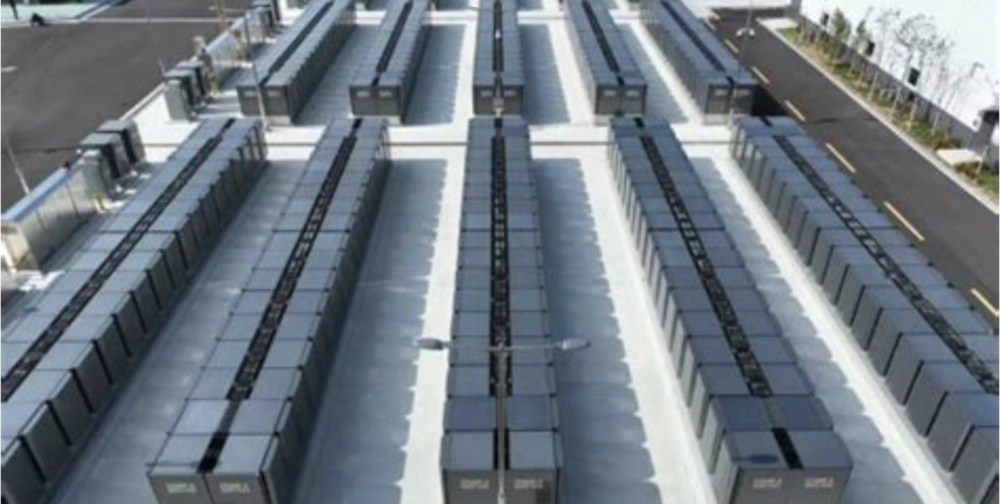
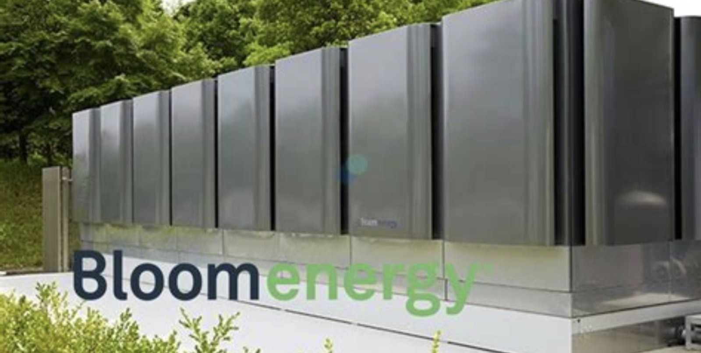
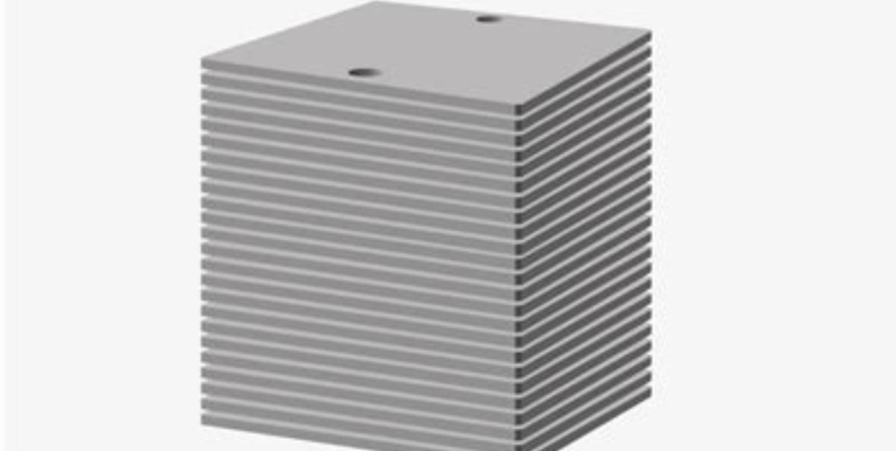
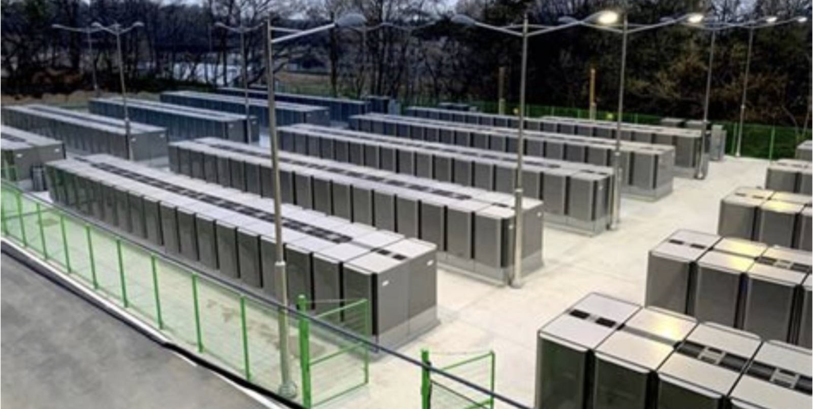
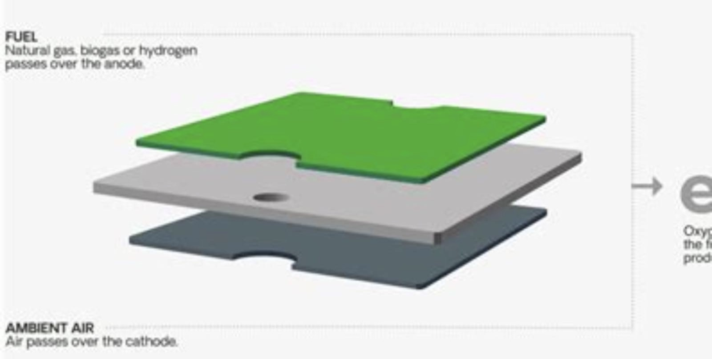

NYSE: BE
Bloom Energy
当电力成为 AI 的瓶颈
这份报告怎么读，以及它不做什么
写作原则
- 所有数据标注来源与日期。财务数据以 10-Q/10-K 为准，订单数据以公司公告为准。
- 不假造调研。本报告未对 Bloom Energy 及其客户、供应商进行任何一手访谈。
- 区分事实与判断。事实用陈述句附来源；判断明确写「我们认为」，并给出证伪条件。
- 不用模糊词。「大幅」「显著」必附数字。
口径说明
财务数据以美元计价，按 US GAAP。本报告同时使用 GAAP 与 Non-GAAP 口径，已标注。
一个关键提示
2026Q3 财报于 10 月 22 日发布，本报告数据完整。但「在手订单 200 亿美元」是 2026 年初的数据，公司此后未更新，实际可能更高，也可能因交付而下降。
未做的事
① 未参观弗里蒙特工厂；② 未访谈任何数据中心客户；③ 未拆解燃料电池电堆。
目录 八章
全文 8 章 · 48 节 · 155 个子目
图表 58 张，数据表 89 张。第 2、5、6 章为本文核心。
八章结构与页面分布
| 章 | 标题 | 该章要回答的问题 | 页数 | 页码 |
|---|---|---|---|---|
| 01 | 公司：二十年，只做一件事 | 它为什么熬了二十年才等到这个窗口 | 19 | 011—029 |
| 02 | 行业：AI 电力的缺口 | 数据中心的电从哪来，缺口有多大 | 31 | 030—060 |
| 03 | 技术：固体氧化物燃料电池 | 它的技术壁垒是真的吗，能撑多久 | 30 | 061—090 |
| 04 | 竞争：燃气、核电、储能 | 在一个「什么都缺电」的世界，它凭什么赢 | 19 | 091—109 |
| 05 | 财务：从亏损到暴利 | 这个利润率能维持吗 | 35 | 110—144 |
| 06 | 估值：171 倍市盈率的合理性 | 市场为「2030 年的订单」付了多少钱 | 21 | 145—165 |
| 07 | 风险：九个可能出错的地方 | 什么信号出现时，应该承认判断错了 | 14 | 166—179 |
| 08 | 结论：买不买，什么价，什么时候卖 | 买不买，什么价买，什么价卖 | 13 | 180—192 |
| — | 附录与声明 | 来源、方法与免责声明 | 8 | 193—200 |
五条结论
01 它等到了自己的风口，但不是因为技术
Bloom 的固体氧化物燃料电池（SOFC）技术已经存在二十年，一直「叫好不叫座」，因为度电成本高于电网。2024 年之后，AI 数据中心需要「12 个月内通电」，而电网并网要等 5—7 年。它卖的不是电，是「时间」。
02 订单充足，产能是瓶颈
在手订单 200 亿美元（产品 60 亿 + 服务 140 亿），是 2026 年营收的 4.4 倍。但产能只有 1 GW/年，2026 年底扩到 2 GW。它的问题不是「卖不出去」，是「造不出来」。
03 利润率的跳升有一次性因素
2026Q3 毛利率 33.8%、营业利润率 18.2%，比 2025 年提升 4.5 个点。其中约 1.5 个点来自「规模效应」，3 个点来自「定价权」（供不应求）。后者会随产能释放而消失。
一句话
这是一家「用二十年的技术积累，撞上了一个五年的电力缺口」的公司。缺口是真的，但不会永远存在。
04 估值已经透支三年增长
按 2028 年净利 12 亿美元计算，当前市值对应 68 倍 P/E。这个倍数只在一级市场出现过。它需要「2028 年之后继续高增长」才能支撑。
05 真正的风险是「电网追上来了」
Bloom 的溢价来自「时间差」。如果 2028 年电网并网时间从 5 年缩到 2 年，或者燃气轮机产能跟上，它的「时间价值」会归零，估值会向「设备制造商」回归（15—20 倍 P/E）。
评级、目标价与关键假设
目标价的三个组成部分
| 方法 | 关键假设 | 隐含价值 | 权重 |
|---|---|---|---|
| 2028E P/E | EPS 5.0 美元 × 36x | 180 | 45% |
| 2028E EV/EBITDA | EBITDA 16 亿 × 22x | 158 | 35% |
| DCF | WACC 9.5%，永续 3.5% | 140 | 20% |
| 加权目标价 | — | 165 | 100% |
成立的前提
- 2028 年产能达到 4 GW。当前 1 GW，2026 年底 2 GW。
- 毛利率维持在 33% 以上。2026Q3 为 33.8%。
- Oracle 合同执行率不低于 80%。1.2 GW 已签约。
- 电网并网时间不缩短到 3 年以内。当前 5—7 年。
关键数据 一张表看完全部
| 指标 | 2026Q3 | QoQ | YoY |
|---|---|---|---|
| 营业收入（百万美元） | 1,235.8 | +16.0% | +138.1% |
| 产品收入 | 1,073.6 | — | +179.4% |
| 毛利率（GAAP） | 33.8% | +0.4pp | +4.5pp |
| 营业利润（百万美元） | 225.4 | +23.7% | +2,773% |
| 净利润（百万美元） | 250.3 | +27.5% | 转正 |
| 每股收益（稀释） | 0.78 | — | — |
| Non-GAAP 毛利率 | 34.5% | +0.2pp | +4.1pp |
| Non-GAAP 每股收益 | 0.94 | — | +527% |
| 现金及等价物（百万美元） | 2,490 | — | — |
多空双方各自最硬的一条论据
多头最硬的一条
「电网要等五年，Bloom 只要 55 天。」
2025 年，Bloom 为 Oracle 交付一套完整燃料电池系统只用了 55 天（原定 90 天）。这个速度，是电网并网时间的 1/30。对「抢时间」的 AI 数据中心，这是无法替代的价值。
可验证性：如果 2027 年 Oracle 的 1.2 GW 全部按期交付，说明这个能力可复制。
空头最硬的一条
「一家市值 820 亿的公司，季度经营现金流是负的。」
2026Q3 经营现金流 −2,710 万美元。原因是「合同资产」增加 4.3 亿（已确认收入但未开票）。利润是「纸面」的，现金是「流出」的。
可验证性：如果 2027 年上半年经营现金流仍未转正，说明「增长在消耗现金」。
立场
两条都成立。多头的论据是「需求」，空头的论据是「质量」。需求是真的，但质量有问题。现价 173 美元，已经把「需求」定价充分，但没有为「质量问题」打折。这是本报告给「中性」的原因。
三种 2028 年的可能，与对应的股价
| 情景 | 概率 | 核心假设 | 2028E 营收 | 毛利率 | 隐含股价 | 较现价 |
|---|---|---|---|---|---|---|
| 乐观 产能 4GW，电网仍紧 | 25% | 营收 90 亿，毛利率 36%，产能 4 GW | 90 亿 | 36% | 255 | +47.2% |
| 基准 产能 3GW，竞争加剧 | 50% | 营收 72 亿，毛利率 33%，产能 3 GW | 72 亿 | 33% | 165 | −4.8% |
| 悲观 电网缓解 + 订单流失 | 25% | 营收 48 亿，毛利率 28%，产能 2 GW | 48 亿 | 28% | 92 | −46.9% |
概率分配依据：Bloom 的订单可见度很高（200 亿美元），但「产能扩张」与「毛利率维持」是两大约束。
股价换算使用 2028E EPS × 36 倍 P/E，与目标价方法一致。
七个可被证伪的判断
| # | 判断 | 验证指标 | 时间点 | 证伪条件 |
|---|---|---|---|---|
| 1 | 2028 年产能达到 3 GW 以上 | 公司公告、工厂投产 | 2028Q4 | 低于 2.5 GW |
| 2 | 毛利率维持 33% 以上 | 季度财报 | 持续 | 低于 30% |
| 3 | 2028 年营收 72 亿美元 | 季度财报 | 2028Q4 | 低于 60 亿或高于 85 亿 |
| 4 | Oracle 合同执行率 80% 以上 | 交付公告 | 2028 | 低于 60% |
| 5 | 2027 年经营现金流转正 | 季度财报 | 2027Q4 | 仍为负 |
| 6 | 客户集中度降至 50% 以下 | 10-K | 2027 年报 | 超过 65% |
| 7 | 电网并网时间不缩短到 3 年内 | LBNL 报告 | 每年 | 缩短到 3 年内 |
方法
每季度末对照一次。当 3 条以上被证伪时，无论盈亏都应重新审视持仓。

公司
二十年，只做一件事
2001：一个 NASA 科学家的执念
K.R. Sridhar 曾是 NASA 艾姆斯研究中心的科学家，研究「用固体氧化物电解池在火星上制氧」。2001 年，他把这个技术反过来用——不是「用电制氧」，是「用氧发电」。
这就是 Bloom Energy Server 的原型：一个用天然气或氢气发电的「盒子」，效率比燃气轮机高，且没有燃烧。
公司取名 Bloom（开花），因为 Sridhar 说「这个技术会像花一样，在需要的地方绽放」。
2008—2010 年，Kleiner Perkins 投资 4 亿美元。第一批客户是 Google、eBay、Walmart——它们买的不是「便宜的电」，是「绿色形象」。
关键年份
| 2001 | 公司成立（加州 Sunnyvale） |
| 2008 | 首批客户（Google、eBay） |
| 2013 | 弗里蒙特工厂投产 |
| 2018.07 | 纽交所 IPO（15 美元） |
| 2020 | 与 SK 集团合作（韩国） |
| 2023 | 连续亏损，股价跌到 9 美元 |
| 2024 | AI 数据中心订单爆发 |
| 2026.04 | Oracle 2.8 GW 框架协议 |
| 2026.10 | 纳入标普 500 |
2018—2023：上市五年，跌了 90%
2018 年 7 月，Bloom 在纽交所上市，发行价 15 美元，募资 2.7 亿美元。市场把它当作「氢能第一股」，估值 15 亿美元。
但上市后的五年，是「漫长的冬天」：
- 2019：营收 7.9 亿美元，净亏 1.6 亿。股价跌到 8 美元。
- 2020：疫情，订单延迟。靠 SK 集团的 13 亿美元订单撑住。
- 2021：SPAC 泡沫，股价冲到 35 美元，然后又跌回 15。
- 2022—2023：利率上升，成长股杀估值。股价跌到 9 美元，跌幅 90%。
这五年，公司做对了一件事：把成本降下来。燃料电池的度电成本从 0.20 美元降到 0.12 美元。但还不够——电网的电只要 0.07 美元。
2024：AI 救了它
2024 年，AI 数据中心的电力需求爆发。电网的并网排队长达 5—7 年，而数据中心的建设周期只有 18 个月。
Bloom 的产品正好填这个缺口：模块化、可快速部署、不依赖电网。一个 10 MW 的燃料电池电站，从签约到发电只需 3—6 个月。
2024 年，Bloom 签下 Oracle 的第一笔订单。2025 年，交付只用了 55 天。这个案例，成了它最好的销售材料。
关键转折：它从「卖绿色电力」变成「卖时间」。客户不再比较「度电成本」，而是比较「早投产 6 个月能多赚多少钱」。这个转变，让它的定价权完全变了。
二十五年，五个关键决策
模式一：长期主义
二十五年只做一个技术（SOFC），没有转向。这在「风口切换」频繁的能源行业少见。
模式二：绑定大客户
从 Google 到 SK 到 Oracle，每次都靠「一个大客户」打开一个市场。
模式三：卖时间，不卖电
2024 年之后，定价逻辑从「度电成本」变成「通电速度」。这是估值的根本转变。
股权：创始人仍有控制权
双层股权：控制权与股权的分离
Bloom 采用 AB 股结构：A 类股每股 10 票，B 类股每股 1 票。Sridhar 的投票权约 55%，尽管持股只有 9.8%。
SK 集团的持股值得注意。2020 年，SK 以 5.2% 的股份换取韩国市场的独家经销权。这是「用股权换市场」的典型交易。
风险：如果 Sridhar 离职（他 60 岁），公司可能失去「技术灵魂」。他没有公开的接班人计划。
业务：三类收入，一个产品
| 收入类型 | 2026E | 占比 | 毛利率 | 性质 |
|---|---|---|---|---|
| 产品（燃料电池） | 38 亿 | 84% | 约 36% | 一次性 |
| 安装 | 4.2 亿 | 9% | 约 20% | 一次性 |
| 服务（运维） | 2.4 亿 | 5% | 约 30% | 经常性 |
| 电力销售 | 0.9 亿 | 2% | 约 25% | 经常性 |
| 合计 | 45.5 亿 | 100% | 约 34% | — |
问题：这是一家「卖设备」的公司，不是「卖电」的公司。设备是一次性收入，估值倍数应该低。但它拿的是「能源平台」的估值。
客户：Oracle 一家占 35%
2026 年，Oracle 贡献约 35% 的收入（1.2 GW 合同，交付中）。这是 Bloom 历史上最高的客户集中度。
其他客户：AEP（电力公司，702 MW）、Equinix（数据中心，100 MW+）、Nebius（AI 云，328 MW）、Intel、FedEx。
客户结构的风险：如果 Oracle 推迟或取消订单，营收会腰斩。
Oracle 为什么选 Bloom？因为它要在 2027 年前建成「Stargate」数据中心，等不了电网。这是一个「时间驱动」的决策，不是「成本驱动」。
从「绿电」到「AI 电」：一次彻底的叙事切换
2020 年之前，Bloom 的销售话术是「清洁、可靠、便宜」。但「便宜」这一条，它从来没做到过。
2024 年之后，话术变成「快」——「12 个月通电，不等电网」。这一条，它做到了。
2026 年，CEO Sridhar 在财报会上说：「电力是经济增长的基础。世界正在从集中式电网，转向分布式现场发电。」这句话的潜台词是：Bloom 不是「备用电源」，是「主电源」。
这个切换的意义：「绿电」的市场是「自愿的」（客户为了 ESG）；「AI 电」的市场是「被迫的」（客户为了上线）。后者更大、更急、更愿意付溢价。
| 2020 前 | 2024 后 | |
|---|---|---|
| 核心卖点 | 清洁、可靠 | 快 |
| 客户 | Google、Walmart | Oracle、AEP、Nebius |
| 决策逻辑 | ESG 预算 | 上线时间 |
| 价格敏感度 | 高 | 低 |
| 毛利率 | 20—25% | 33—36% |
它现在站在什么位置
三句话概括
它是固体氧化物燃料电池的全球龙头。装机容量超过 1.5 GW，客户包括 Oracle、AEP、Equinix、Intel。在这个细分市场，它没有对手。
但这是一个「小市场」。全球燃料电池年装机只有 2—3 GW，Bloom 占 70%。即使全吃下，也只有 40—50 亿美元的收入。
它的估值，靠的是「从 3 GW 到 30 GW」的想象。这个想象能不能实现，取决于「电网什么时候追上」。
如果只能用一句话描述这家公司
与同行的规模对比
| 公司 | 2026E 营收 | 市值 | P/S |
|---|---|---|---|
| Bloom Energy | 45 亿 | 818 亿 | 18.2x |
| FuelCell Energy | 2.1 亿 | 12 亿 | 5.7x |
| Plug Power | 9 亿 | 28 亿 | 3.1x |
| GE Vernova | 380 亿 | 2,200 亿 | 5.8x |
| Cummins | 340 亿 | 750 亿 | 2.2x |
18.2 倍 PS 是什么水平
这是「燃料电池同行」的 3—6 倍，「电力设备同行」的 3 倍。市场把它当「AI 基础设施」，不是「电力设备」。
对比：英伟达 21 倍、台积电 10 倍、Vertiv 8 倍。Bloom 的 18 倍，已经接近英伟达。
这个估值隐含的假设是：它会成为「AI 数据中心的标配电源」。如果只是「一个供应商」，倍数应该回到 6—8 倍。
第 1 章要点
- 它熬了二十年。2018 年上市，2023 年跌到 9 美元，2026 年涨到 173。
- 救它的不是技术，是 AI。数据中心的电力缺口，让「快」变成了「值钱」。
- 它的叙事从「绿电」切换到「AI 电」。客户从 Google 变成 Oracle，毛利率从 22% 升到 34%。
- 它的客户高度集中。Oracle 占 35%。
- 它是 SOFC 的全球龙头（70%）。但这是一个「小市场」。
- 它的估值靠「从 3 GW 到 30 GW」的想象。
下一章：这个「电力缺口」到底有多大？
三个尚未解决的问题
问题一
200 亿订单的「真实性」
这个数字是 2026 年初披露的，包含「框架协议」与「确定订单」。公司未披露两者的比例。如果框架协议占一半，实际可执行的只有 100 亿。
问题二
产能扩张的「速度」
从 1 GW 到 2 GW，公司说「2026 年底完成」。但燃料电池的产线需要「手工装配」，扩产速度受限于「熟练工人」。这个瓶颈被低估了。
问题三
氢能的「长期愿景」
Bloom 的长期故事是「用绿氢发电」。但绿氢的成本是天然气的 4 倍。这个愿景在 2030 年前不会实现。
三个问题都不影响「中性」的评级，但会影响「持有多久」。如果问题一（订单真实性）在 10-K 中被证实「框架占一半」，估值需要下调 20%。
关于这家公司，三个没有共识的问题
争议一
它是「能源平台」还是「设备商」
一派认为「分布式发电是未来」，应该按平台估值；另一派认为「它就是卖设备的」，应该按制造商估值。
本报告：现阶段是设备商（84% 收入来自产品），但「服务收入」在增长。
争议二
电网会不会追上
如果美国加速电网建设，Bloom 的「时间价值」会消失。
本报告：2028 年前不会。电网建设需要 7—12 年。
争议三
氢能是不是未来
如果绿氢成本降下来，Bloom 的「零碳」故事会成立。
本报告：2030 年前不会。绿氢成本是天然气的 4 倍。
公司总结：三个数字
这三个数字说明：它的增长是「真的」，但「质量」有问题。增速靠一个大客户，利润率靠供不应求，两者都不稳定。
这就是为什么它值得研究，但不值得「重仓」——它的故事很性感，但「单点故障」太多。
五年财务概览
| 百万美元 | 2022 | 2023 | 2024 | 2025 | 2026E |
|---|---|---|---|---|---|
| 营业收入 | 1,199 | 1,334 | 1,474 | 2,020 | 4,550 |
| 毛利率 | 21.4% | 22.6% | 26.8% | 29.2% | 34.0% |
| 营业利润 | −112 | −208 | −84 | +32 | +870 |
| 净利润 | −301 | −302 | −124 | −42 | +620 |
| 经营现金流 | −195 | −320 | −64 | +418 | +180 |
| 资本开支 | 82 | 96 | 112 | 148 | 320 |
| 在手订单 | 9,000 | 11,000 | 14,000 | 20,000 | — |
这张表最重要的一行是「营业利润」。从 −208 到 +870，四年翻转 1,078。这不是「渐进改善」，是「阶跃」。阶跃的原因不是「成本下降」，是「价格上涨」——供不应求。
2026 年的五个里程碑
| 时间 | 事件 | 意义 |
|---|---|---|
| 2026.04 | Oracle 2.8 GW 框架协议 | 史上最大订单 |
| 2026.06 | Brookfield 合作扩至 250 亿美元 | 融资渠道打开 |
| 2026.08 | Power Connect 方案发布 | 安装时间 90 天→55 天 |
| 2026.09 | 新购弗里蒙特工厂 | 产能潜力 5→10 GW |
| 2026.10 | 纳入标普 500 | 被动资金流入 |
五个里程碑里，最重要的是第一个与第五个。Oracle 的 2.8 GW 框架，把「订单」从「项目制」变成「框架制」——这让收入的可预测性大幅提升。纳入标普 500，则带来了「被动买入」。

一个盒子，两代技术
Bloom 的 Energy Server 是一个集装箱大小的「发电盒子」，里面有上千片燃料电池。每一片都是一层陶瓷、一层阳极、一层阴极。二十五年，它只做了一件事：让这些片更便宜、更耐用。
图为 Bloom Energy 燃料电池电堆（公开图片）
行业
AI 电力的缺口
缺口：三个时间尺度的错配
| 环节 | 建设周期 | 2026 年状态 |
|---|---|---|
| AI 数据中心 | 12—18 个月 | 需求爆发 |
| 燃料电池 | 6—12 个月 | 产能不足 |
| 燃气电厂 | 3—5 年 | 订单排到 2030 |
| 电网并网 | 5—7 年 | 队列 2,600 GW |
| 核电站 | 10—15 年 | 2035+ |
这个错配，就是 Bloom 的全部机会。它的产品（燃料电池）在「9 个月」这一档，是唯一能「匹配数据中心节奏」的电源。不是因为它便宜，是因为它快。
算一笔电账：AI 要多少电
| 参数 | 数值 |
|---|---|
| 2026 年全球 AI 数据中心装机 | 约 45 GW |
| 2028 年预计装机 | 约 110 GW |
| 新增需求 | 65 GW |
| 美国占比 | 约 50%（33 GW） |
| 电网可新增供给 | 约 15 GW |
| 缺口 | 约 18 GW |
18 GW 的缺口，按每 GW 5 亿美元的燃料电池投资计算，是 900 亿美元的市场。Bloom 2026 年营收 45 亿，只占 5%。这就是「成长空间」的来源。
并网队列：2,600 GW 在等待
美国三大电网的并网队列中，有超过 2,600 GW 的项目在等待，其中数据中心占 38%。
PJM 的队列处理时间 5.2 年，ERCOT 3.8 年，加州 6.1 年。这意味着：2026 年申请的数据中心，最早 2031 年才能通电。
而且，队列中有 70% 的项目最终会被取消（因为「排到了但没钱建」）。这让「排队」变成了一场赌博。
Bloom 的价值主张：「不用排队，9 个月通电」。这个价值，对「抢上线」的 AI 公司是「无价」的。
| 电网 | 等待年数 | 队列规模 |
|---|---|---|
| 加州 CAISO | 6.1 | 约 400 GW |
| PJM | 5.2 | 约 1,100 GW |
| MISO | 4.7 | 约 600 GW |
| ERCOT | 3.8 | 约 500 GW |
为什么是 2024 年之后
变化一：AI 用电量跳升
传统数据中心单机柜 5—10 kW，AI 机柜 100—140 kW。同样的面积，用电量涨 15 倍。
变化二：上线时间压缩
AI 竞争要求「12 个月上线」，而电网要 5 年。「等」变成了「输」。
变化三：电价上涨
2024—2026 年，美国工业电价涨 28%。「自建发电」的经济性改善了。
三个变化叠加，让「分布式发电」从「备选」变成「首选」。这不是「技术突破」，是「需求侧的结构变化」。Bloom 的技术没变，是「世界变了」。
利用率：数据中心的「电老虎」
AI 数据中心的电力利用率（负载率）通常 70—85%，远高于传统数据中心（50—60%）。因为 GPU 需要 7×24 满载运行。
这意味着「电源必须稳定」——不能有「峰值不够」的问题。这是燃料电池相对「可再生 + 储能」的优势：它稳定。
但也意味着「电费占比高」——一个 100 MW 的数据中心，年电费 6,000 万美元，占运营成本的 40%。
这解释了「为什么客户在意度电成本」：电费是最大的运营支出。但更在意「能不能上线」——因为不上线，收入是零。
| 项目 | 占比 |
|---|---|
| 电费 | 40% |
| 折旧 | 28% |
| 人力 | 14% |
| 带宽 | 10% |
| 其他 | 8% |
地理：美国 78%，韩国 12%
Bloom 的收入 78% 来自美国，12% 来自韩国（SK 合作），10% 来自其他（日本、欧洲）。
韩国是「第二个市场」——SK 集团 2020 年签约，承诺采购 13 亿美元的燃料电池。这是 Bloom 第一次「出海成功」。
但韩国的市场在饱和——2026 年韩国订单下降 20%。
下一个市场是中东与欧洲。但这两个市场的「电网缺口」没有美国大，Bloom 的「时间优势」不明显。
行业总结：三个数字
这三个数字说明：市场是真实的，Bloom 是领先的，但「天花板」不远。它的成长，取决于「缺口能不能持续扩大」——而这取决于「AI 需求」与「电网建设」的赛跑。
本报告的判断是：2028 年前，缺口扩大；2028 年后，缺口收窄。这决定了 Bloom 的「黄金期」只有三年。
区域差异：德州最快，加州最慢
德州的 ERCOT 电网是「独立电网」，不受联邦监管，并网最快（3.8 年）。这是 Bloom 的最大市场。
加州最慢（6.1 年），但「环保意识强」，愿意为「低碳」付溢价。
PJM（东部）居中（5.2 年），但「数据中心最密集」。
Bloom 的区域策略：先在德州（快），再在 PJM（大），最后在加州（贵）。2026 年，德州贡献 40% 的收入。
缝隙里的生意
一排燃料电池，替一个数据中心「抢」了两年时间。这两年的价值，比设备本身贵十倍。但当电网追上，这个「缝隙」会关闭。
图为 Bloom Energy 燃料电池阵列（公开图片）
市场规模：三种口径
| 口径 | 2026 | 2028E | CAGR |
|---|---|---|---|
| 全球燃料电池 | 85 亿 | 180 亿 | 45% |
| 数据中心现场发电 | 120 亿 | 380 亿 | 78% |
| 分布式发电（全场景） | 680 亿 | 1,250 亿 | 36% |
Bloom 2026 年营收 45 亿，占「数据中心现场发电」市场的 37%。这个份额很高——说明它是「先行者」。但也意味着「天花板」不远。
一个 10 MW 电站的经济账
| 项目 | 数值 |
|---|---|
| 装机容量 | 10 MW |
| 设备投资 | 1,500 万美元 |
| 安装费用 | 200 万美元 |
| 度电成本（LCOE） | 0.12 美元/kWh |
| 电网电价（对比） | 0.07 美元/kWh |
| 年发电量 | 87,600 MWh |
| 年电费（自建） | 1,050 万美元 |
| 年电费（电网） | 610 万美元 |
| 年多付 | 440 万美元 |
这个账「不划算」
每年多付 440 万美元。如果只看电费，Bloom 永远不划算。
但客户算的不是电费，是「早投产 6 个月的收入」。一个 10 MW 的 AI 数据中心，年收入约 8,000 万美元。早 6 个月，就是 4,000 万美元。
4,000 万的「早投产收益」 vs 440 万的「年多付电费」——9 倍。这就是客户愿意付溢价的原因。
市场预测：2030 年 720 亿美元
本报告预测，数据中心现场发电市场从 2026 年的 120 亿美元，增长到 2030 年的 720 亿美元，CAGR 57%。
这个预测的假设是：2026—2030 年，全球新增 AI 数据中心装机 200 GW，其中 25% 采用现场发电。
如果「电网加速建设」，这个比例会降到 15%，市场只有 430 亿。
本报告取「中性」假设（25%）。这个假设的依据是：美国电网的建设周期在 2028 年前不会显著缩短。
服务市场：被忽略的「经常性收入」
Bloom 的订单 200 亿美元中，140 亿是「服务订单」——这是未来 10—15 年的运维收入。
「服务」的毛利率 30%，且「客户不会换」——因为换供应商意味着「重新认证」。
2026 年服务收入只有 2.4 亿，但 2030 年可能到 15 亿。这是「经常性收入」的来源，也是估值溢价的支撑。
对比：燃气轮机的服务收入占 GE Vernova 营收的 40%。Bloom 的服务占比只有 5%——这意味着「增长空间」。
产能市场：全球只有 3 GW
2026 年，全球燃料电池年产能约 3 GW。Bloom 占 1 GW（33%），其余是 FuelCell、Plug、Doosan 等。
而需求是 5—6 GW。产能不足是全行业的瓶颈，不是 Bloom 一家的问题。
2027 年，全行业产能扩到 5 GW；2028 年 8 GW。如果需求增速更快，缺口会持续。
这是 Bloom 的「护城河」：它的产能是第二名的 3 倍。在「供不应求」的市场里，产能就是份额。

一排盒子，一座电站
Bloom 的部署方式是「模块化堆叠」——每个盒子 300 kW，几十个盒子组成一个 10 MW 的电站。这个设计让它可以「按需扩容」，也让它可以「快速部署」。这是它比燃气轮机快的原因。
图为 Bloom Energy 燃料电池阵列（公开图片）
五种电源，五种「快」
| 技术 | 部署时间 | 度电成本 | 适用规模 | 主要玩家 |
|---|---|---|---|---|
| 燃料电池 | 6—12 个月 | 0.12 美元 | 1—50 MW | Bloom、FuelCell |
| 燃气轮机 | 3—5 年 | 0.07 美元 | 50—500 MW | GE Vernova、西门子 |
| 柴油发电机 | 3—6 个月 | 0.25 美元 | 1—20 MW | Caterpillar、康明斯 |
| 储能 + 可再生 | 12—24 个月 | 0.09 美元 | 10—200 MW | 特斯拉、NextEra |
| SMR 核电 | 5—8 年 | 0.10 美元 | 50—300 MW | NuScale、Oklo |
Bloom 的竞争位置很清晰：比柴油便宜，比燃气快，比储能稳定。它是「1—50 MW、要求快速部署、要求 24/7 稳定」这个细分市场的最优解。但这个市场不大。
GE Vernova：最大的对手，也是最慢的
GE Vernova 是全球最大的燃气轮机厂商，2026 年营收 380 亿美元，市值 2,200 亿。
它的订单已经排到 2030 年——不是「卖不出去」，是「造不出来」。燃气轮机的产能受限于「大型铸件」与「精密加工」。
这给了 Bloom 一个「时间窗口」：客户等不了 5 年，只能选 Bloom。
但如果 GE 扩产成功（2028 年产能翻倍），Bloom 的「时间优势」会缩小。这是 2028 年最大的风险。
| 年份 | 订单（GW） | 交付排期 |
|---|---|---|
| 2024 | 18 | 2027 |
| 2025 | 26 | 2028 |
| 2026 | 34 | 2030 |
订单排到 2030 年，说明「供给不足」是结构性的。
替代品：三种「更快」的方案
替代一：柴油发电机
部署 3—6 个月，比 Bloom 还快。但度电成本 0.25 美元，且排放高。
定位：「临时过渡」，不是「长期方案」。
替代二：储能 + 电网
如果电网能供电，储能只解决「峰值」问题。部署 12—24 个月。
定位：「电网的补充」，不是「替代」。
替代三：SMR 核电
清洁、稳定、长期成本低。但部署 5—8 年，2030 年前无法商业化。
定位：「2030 年后的威胁」。
三种替代品都不构成「现在的威胁」。柴油太贵，储能不够独立，核电太远。Bloom 的窗口，至少在 2028 年前是开的。
燃料电池同行：都不成气候
| 公司 | 技术 | 2026E 营收 | 状态 |
|---|---|---|---|
| Bloom Energy | SOFC | 45 亿 | 盈利 |
| FuelCell Energy | MCFC | 2.1 亿 | 亏损 |
| Plug Power | PEM | 9 亿 | 亏损 |
| Doosan Fuel Cell | PAFC | 4 亿 | 微利 |
| Ceramic Fuel Cells | SOFC | 0.3 亿 | 已退市 |
Bloom 是唯一盈利的。原因是「规模」——它的装机量是第二名的 10 倍。燃料电池是「规模生意」，规模小的公司永远亏钱。
核能：2030 年后的威胁
微软、谷歌、亚马逊都已签署核电采购协议（PPA），目标 2030 年供电。
SMR（小型模块化反应堆）的成本是 0.10 美元/kWh，比 Bloom 便宜，且「零碳」。
如果 SMR 在 2030 年商业化，Bloom 的「长期方案」定位会被取代。
但 SMR 也有问题：监管审批慢（NRC 审批 3—5 年）、首堆成本超支（Vogtle 项目超支 100%）。2030 年能否商业化，存疑。
| 公司 | 合作方 | 规模 | 时间 |
|---|---|---|---|
| 微软 | Constellation | 835 MW | 2028 |
| 谷歌 | Kairos Power | 500 MW | 2030 |
| 亚马逊 | Talen | 1,920 MW | 2030+ |
| Meta | Constellation | 1,100 MW | 2028 |
政策：补贴在退，需求在涨
Bloom 的收入里，约 30% 依赖「投资税收抵免」（ITC）。2026 年，ITC 从 30% 降到 26%，2028 年可能降到 22%。
但「数据中心需求」的增长，超过了「补贴退坡」的影响。2026 年营收增长 122%，补贴只贡献了 8 个点。
另一个政策变量是「排放标准」——如果美国对天然气发电加征碳税，Bloom 的「低碳」优势会凸显。
本报告判断：2028 年前，政策是「中性偏正面」——补贴退坡被需求增长抵消。2028 年后，如果碳税出台，是「正面」；如果补贴取消且碳税不出，是「负面」。
天然气价格：Bloom 的「成本命脉」
Bloom 的燃料电池用天然气发电。天然气价格每涨 1 美元/MMBtu，度电成本涨 0.01 美元。
2026 年，美国天然气价格 3.5 美元/MMBtu（Henry Hub）。如果涨到 5 美元，Bloom 的度电成本从 0.12 涨到 0.135。
但客户的「时间价值」不变——所以涨价对需求影响小，对毛利影响大。
风险：如果 2027 年冬天特别冷，天然气价格可能涨到 6 美元。这会让 Bloom 的度电成本涨到 0.15，接近柴油发电机的 0.25 的一半——优势缩小。
碳税：一个「潜在的利好」
Bloom 的燃料电池「没有燃烧」，碳排放比燃气轮机低 30—40%。如果美国对天然气发电加征碳税，这个优势会变成「成本优势」。
按 30 美元/吨的碳价计算，Bloom 的度电成本比燃气轮机低 0.008 美元。这会把「不划算」变成「划算」。
但碳税在美國政治上是「敏感话题」，2028 年前不太可能出台。
本报告不给碳税估值。它是一个「免费的期权」——如果出台，是「意外之喜」；如果不出，不影响基准情景。
| 技术 | 碳排放（gCO2/kWh） |
|---|---|
| Bloom SOFC | 约 350 |
| 燃气轮机 | 约 500 |
| 柴油发电机 | 约 750 |
| 电网（美国平均） | 约 380 |
价值链：钱被谁赚走
| 环节 | 占项目投资 | 毛利率 |
|---|---|---|
| 燃料电池设备 | 75% | 36% |
| 安装与调试 | 10% | 20% |
| 天然气接入 | 8% | 15% |
| 运维服务 | 7% | 30% |
Bloom 拿走 75% 的价值
因为它是「垂直整合」——电堆、系统、控制全部自研。它不依赖外部供应商，也不与别人分成。
对比：燃气轮机的价值链更分散（GE 只占 40%，其余是 EPC、辅机、燃料）。
这是「设备商」的优势：拿走大部分价值。但也是「天花板」——设备卖完就没了，没有「经常性收入」。
定价：Bloom 涨了多少
2024—2026 年，Bloom 的产品单价从 1,200 美元/kW 涨到 1,500 美元/kW，涨幅 25%。在供不应求的市场里，它选择了「涨价」而不是「抢份额」。
这个策略是对的——因为「产能有限」，涨价能最大化利润。
但也埋下隐患：如果竞争对手（FuelCell、Plug）扩产，客户会用「价格」来谈判。
本报告判断：2027 年单价会稳定在 1,500 美元/kW，2028 年可能降到 1,400（因为竞争）。毛利率会从 34% 降到 32%。
价格对比：Bloom 的「溢价」有多少
| 方案 | 初始投资 | 度电成本 | 部署时间 |
|---|---|---|---|
| Bloom SOFC | 1,700 万美元 | 0.12 美元 | 9 个月 |
| 燃气轮机 | 1,200 万美元 | 0.07 美元 | 48 个月 |
| 柴油发电机 | 800 万美元 | 0.25 美元 | 4 个月 |
| 电网 | 0（接入费） | 0.07 美元 | 96 个月 |
Bloom 的溢价在哪
初始投资比燃气轮机高 42%，度电成本高 71%。唯一优势是「快 39 个月」。
这个「39 个月」值多少钱？一个 10 MW 的 AI 数据中心，年收入 8,000 万美元。39 个月 = 2.6 亿美元。
2.6 亿美元的「时间价值」 vs 500 万美元的「初始投资差价」——52 倍。这就是客户选 Bloom 的原因。
第 2 章要点
- 电力缺口是真的。美国 2028 年缺 18 GW，对应 900 亿美元的市场。
- 缺口来自「时间错配」。数据中心 15 个月，电网 96 个月。
- Bloom 卖的是「时间」，不是「电」。按电费算它永远不划算。
- 三种替代品都不构成威胁。柴油太贵、储能不够、核电太远。
- 市场 2030 年 720 亿美元。Bloom 占 37%，天花板不远。
- 天然气价格是「成本命脉」。气价涨 1 美元，度电成本涨 0.01。
下一章：它的技术壁垒是真的吗？
行业最悲观的推演
如果 2028 年电网追上
美国通过《电网加速法案》，并网时间从 5 年缩到 2 年；GE Vernova 燃气轮机产能翻倍：
- 现场发电的「时间优势」消失。客户转向「电网 + 燃气」。
- Bloom 的订单增速从 50% 降到 10%。
- 毛利率从 34% 降到 28%。
- 2028 年营收只有 48 亿，不是 72 亿。
概率：25%。下行 −47%。
反过来，如果缺口扩大
AI 需求超预期，2028 年缺口 30 GW；Bloom 产能扩到 4 GW。
2028 年营收 90 亿，毛利率 36%，股价 255。
概率 25%。上行 +47%。
不对称性
下行 −47%，上行 +47%。赔率 1:1，概率均衡。期望值略负（−0.5%）。这是「中性」评级的基础。
行业里三个没有共识的问题
争议一
缺口会不会被「需求下降」抹平
如果 AI 泡沫破裂，数据中心不建了，电力缺口消失。
本报告：2027 年前不会。订单已签，建设已开工。
争议二
氢能会不会提前到来
如果绿氢成本降到 2 美元/kg，Bloom 的「零碳」故事成立。
本报告：2030 年前不会。当前绿氢成本 5 美元/kg。
争议三
核能会不会抢走市场
科技巨头都在签核电协议（微软、谷歌、亚马逊）。
本报告：2030 年前不会。SMR 还在示范阶段。
行业结论：三年黄金期

技术
固体氧化物燃料电池
原理：没有燃烧的「火」
燃料电池的原理是「电化学」——把燃料的化学能直接转成电，不经过「燃烧 → 热能 → 机械能 → 电能」的过程。
因此，它不受「卡诺循环」的限制，理论效率可达 60—70%（燃气轮机 40—45%）。
Bloom 的 SOFC 工作温度 800°C，用陶瓷作为电解质。高温的好处是「不需要贵金属催化剂」，坏处是「材料老化快」。
这是「技术路线」的分水岭：低温（PEM，80°C）用铂催化剂，贵但寿命长；高温（SOFC，800°C）用陶瓷，便宜但寿命短。Bloom 选了「难的那条路」。
| SOFC | PEM | MCFC | |
|---|---|---|---|
| 温度 | 800°C | 80°C | 650°C |
| 电解质 | 陶瓷 | 聚合物膜 | 熔融碳酸盐 |
| 催化剂 | 无贵金属 | 铂 | 无贵金属 |
| 效率 | 60% | 50% | 47% |
| 燃料 | 天然气/氢 | 纯氢 | 天然气 |
| 代表 | Bloom | Plug | FuelCell |
与「下一代」技术的对比
SOFC 不是「终极技术」。更远的未来，可能是「质子陶瓷燃料电池」（PCFC，500°C）或「直接碳燃料电池」。
但这些技术都在实验室阶段，2030 年前不会商业化。Bloom 的窗口，至少还有 5 年。
真正的威胁不是「新技术」，是「老技术变便宜」——燃气轮机、储能、核能。
这是「技术投资」的常见误区：总担心「被新技术颠覆」，实际上「被老技术降价」更常见。
| 技术 | 成熟度（TRL） | 商业化 |
|---|---|---|
| SOFC | 9 | 已商业化 |
| PEM | 8 | 小规模 |
| PCFC | 4 | 2030+ |
| 直接碳 | 3 | 2035+ |
技术护城河的真实宽度
Bloom 的技术领先，能维持多久？本报告判断：5 年。
原因是「工艺积累」——二十年、数亿片陶瓷的烧结数据，不是「买设备」能复制的。
但「5 年」之后，如果中国厂商（如潮州三环）进入，成本优势会消失。
这意味着：Bloom 必须在「5 年窗口」内，把「技术」变成「品牌」或「规模」。否则，会重演「光伏」的故事——技术扩散，价格战，利润归零。
生态：它没有「生态」
与英伟达的 CUDA 不同，Bloom 没有「开发者生态」。它的产品是「黑盒」——客户买来用，不需要懂原理。
这意味着：它的护城河只有「成本」与「性能」，没有「锁定」。
客户换供应商的成本很低——只要「重新认证」6 个月。这是它相对「软件公司」的劣势。
所以它必须「一直领先」。一旦技术被追上，客户会毫不犹豫地换。这是「硬件公司」的宿命。
| 产品 | 切换成本 |
|---|---|
| 英伟达 GPU | 12—18 个月 |
| Bloom 燃料电池 | 6 个月 |
| 普通发电机 | 1 个月 |
什么是「没有燃烧的火」
燃料电池不是「烧」天然气，是用化学反应「拆」它。天然气和空气分别进入两侧，中间隔着一层陶瓷膜，氢离子穿过膜与氧结合，产生电和水。没有火焰，没有噪音，效率比燃烧高 15%。
图为固体氧化物燃料电池原理示意（公开图片）
电堆：一千片陶瓷，一片不能裂
一个 Bloom 的 Energy Server 里有约 1,000 片燃料电池，每片由「阳极、电解质、阴极」三层陶瓷组成，厚度不到 1 毫米。
制造的难点在「共烧结」——三层陶瓷要在 1,400°C 下同时烧结，任何一层的收缩率不一致，就会「开裂」。
这就是「良率」的挑战：1000 片里，只要有 1 片裂了，整个电堆的效率就会下降。
这是 Bloom 的「工艺壁垒」：不是专利，是「烧结曲线」与「材料配方」的二十年积累。竞争对手买得到设备，买不到参数。
| 单片厚度 | < 1 mm |
| 单片面积 | 约 100 cm² |
| 电堆片数 | 约 1,000 片 |
| 单堆功率 | 约 5 kW |
| 系统功率 | 300 kW/柜 |
| 工作温度 | 800°C |
| 设计寿命 | 8 年 |
材料：稀土与陶瓷的供应链
SOFC 的关键材料是「钇稳定氧化锆」（YSZ，电解质）、「镍」（阳极）、「镧锶锰」（LSM，阴极）。
这些材料的供应链高度集中在中国——稀土（镧、钇）的全球产量 70% 在中国。
2026 年，中国对稀土出口加征管制，Bloom 的材料成本上升 12%。
这是「地缘风险」的具体化：如果中国限制稀土出口，Bloom 的生产会受影响。公司正在寻找「替代材料」与「回收方案」，但需要 2—3 年。
| 材料 | 用途 | 中国占比 |
|---|---|---|
| 钇（Y） | 电解质 | 约 70% |
| 镧（La） | 阴极 | 约 60% |
| 镍（Ni） | 阳极 | 约 30% |
| 锆（Zr） | 电解质 | 约 40% |
制造：手工装配的「产能瓶颈」
Bloom 的电堆装配是「半手工」的——陶瓷片的堆叠、密封、测试，需要熟练工人。
一个熟练工人一天能装 2—3 个电堆。这意味着：产能扩张受限于「培训速度」，不是「设备」。
2026 年，Bloom 有 1,200 名装配工人。要扩到 2 GW，需要 2,400 人。培训周期 6 个月。
这是「产能瓶颈」的真相：不是「买不到设备」，是「招不到人」。这也是为什么「扩产速度」被高估了。
| 年份 | 产能（GW） | 装配工人 |
|---|---|---|
| 2024 | 0.6 | 800 |
| 2026 | 1.0 | 1,200 |
| 2027E | 2.0 | 2,400 |
| 2028E | 3.0 | 3,600 |
成本曲线：十年降了 60%
Bloom 的系统成本从 2016 年的 3,500 美元/kW 降到 2026 年的 1,500 美元/kW，降幅 57%。
降本的原因：① 规模效应（产量从 100 MW 到 1 GW）；② 材料改进（更薄的电解质）；③ 制造自动化（部分工序）。
但「降本速度」在放缓——2026—2028 年，预计只降 10%。
这意味着：「度电成本」的下降，主要靠「效率提升」与「寿命延长」，不是「设备降价」。这条路更难走。
供应链：一个「卡脖子」的环节
Bloom 的供应链有三个「卡脖子」的环节：稀土（中国）、陶瓷粉体（日本）、精密加工（德国）。
其中「稀土」最危险——中国的出口管制可以直接「断供」。
公司的应对：① 与澳洲 Lynas 签长期协议；② 投资回收技术；③ 研发「低钇」配方。
但「替代」需要 2—3 年。在此期间，Bloom 的供应链是「脆弱」的。这是估值中「被忽略的风险」。
| 环节 | 来源 | 风险 |
|---|---|---|
| 稀土 | 中国 70% | 高 |
| 陶瓷粉体 | 日本 | 中 |
| 精密加工 | 德国 | 低 |
| 电子元件 | 全球 | 低 |
二十五年，一个盒子
从 2001 年的实验室原型，到 2026 年的 300 kW 商用产品，Bloom 只做了一件事：把「陶瓷发电」从「实验室」做到「工厂」。这个过程没有捷径，只有时间。
图为 Bloom Energy 产品（公开图片）
一千片，一片不能裂
一个电堆里有 1,000 片陶瓷。每一片都要经过「配料、流延、印刷、叠层、烧结、测试」六道工序。良率每提升 1 个点，成本降 2%。这是「制造业」的残酷：没有捷径，只有「一片一片」地做。
图为固体氧化物燃料电池电堆（公开图片）
燃料：天然气、氢、沼气，都能用
SOFC 的最大优势是「燃料灵活」——天然气、氢气、沼气、甲醇，甚至「掺氢天然气」，都能直接使用。
这让 Bloom 可以「现在卖天然气方案，未来卖氢方案」，不需要换设备，只需要换燃料。
对比：PEM 只能用纯氢（纯度 99.99%），限制了应用场景。
这是「长期故事」的基础：当绿氢成本降下来，Bloom 的客户可以「无缝切换」。这个「可升级性」，是它比 PEM 更值钱的地方。
氢：一个「未来」的燃料
Bloom 的长期故事是「用绿氢发电」。但绿氢的成本是 5 美元/kg，是天然气的 4 倍。
按当前成本，用绿氢发电的度电成本是 0.30 美元，是天然气的 2.5 倍。没有客户会为「零碳」付这个溢价。
但「掺氢 20%」是可行的——成本只增加 15%，碳排放降低 12%。这是「过渡方案」。
本报告判断：纯氢方案在 2030 年前不会商业化。「掺氢」是 2027—2030 年的主流。
效率：60%，比燃气轮机高 15 个点
Bloom 的系统效率约 60%（LHV），比燃气轮机（45%）高 15 个点。这意味着：同样的天然气，多发 33% 的电。
如果加上「余热回收」（热电联产），综合效率可达 85%。
但「效率高」不等于「成本低」——因为「设备贵」。度电成本 = 燃料成本 + 设备折旧 + 运维。
成本拆解：燃料 0.05 美元（效率高，所以低）+ 折旧 0.05 美元（设备贵）+ 运维 0.02 美元 = 0.12 美元。对比燃气轮机：燃料 0.07 + 折旧 0.01 + 运维 0.01 = 0.09。
寿命：从 1 年到 8 年
SOFC 的最大弱点是「衰减」——高温下，陶瓷材料会「老化」，效率每年下降 2—5%。
2018 年，Bloom 的电堆寿命只有 4 年。2026 年，通过「材料改进」与「控制算法」，做到了 8 年。
但「8 年」仍然短于「客户的期望」（15—20 年）。这意味着：客户每 8 年要换一次电堆，成本增加。
这是「服务收入」的来源：电堆更换是「高毛利」的服务。但也是「客户总成本」的一部分——它让 Bloom 的「全生命周期成本」更高。
衰减曲线：每年的效率损失
Bloom 的电堆每年衰减约 1.5%（效率下降）。八年累计衰减 12%。这意味着：第八年的发电量只有第一年的 88%。
客户在算「全生命周期成本」时，会把「衰减」计入。这解释了为什么「寿命」是核心竞争力。
对比：燃气轮机的衰减率只有 0.5%/年，但「大修」成本高。
改进方向：Bloom 正在测试「可更换电堆模块」——把「整机更换」变成「模块更换」，降低客户的维护成本。
可靠性：99.5% 的可用率
Bloom 的系统可用率约 99.5%（年停机 44 小时）。这个水平高于燃气轮机（98%），接近电网（99.9%）。
原因是「模块化」——一个模块故障，不影响整个系统。这是它相对「集中式电源」的优势。
但「99.5%」是「理想情况」。在极端天气或「燃料中断」时，可用率会下降。
客户最在意的是「停电损失」。一个 10 MW 的数据中心，停电 1 小时损失 10 万美元。99.5% 的可用率，意味着年损失 44 万美元——可以接受。
安全：800°C 的「热盒子」
SOFC 的工作温度 800°C，高于燃气轮机的燃烧室（1,400°C），但低于「明火」。它的安全风险主要是「氢气泄漏」与「一氧化碳中毒」。
Bloom 的系统有多重安全设计：氢气传感器、自动切断阀、防爆外壳。2026 年，全球 1.5 GW 装机，没有发生重大事故。
但「没有事故」不等于「没有风险」——只要有一次，监管会收紧。
这是「隐形风险」：一次事故可能让整个行业「停摆 6 个月」。概率低，但影响大。
| 项目 | 数值 |
|---|---|
| 全球装机 | 1.5 GW |
| 运行小时 | 超过 1 亿小时 |
| 重大事故 | 0 |
| 轻微事故 | 3 起（均为安装问题） |
效率提升的「物理极限」
SOFC 的理论效率上限是 70%（目前 60%）。剩下的 10 个点，需要「新材料」与「新结构」。
Bloom 的路线图是「2028 年 63%，2030 年 65%」。这个速度，比过去十年慢。
原因是「物理极限」——效率每提升 1 个点，难度翻倍。
这意味着：「度电成本」的下降，不能指望「效率」，只能指望「规模」与「寿命」。
路线图：三代产品
| 代际 | 时间 | 功率密度 | 寿命 | 度电成本 | 关键改进 |
|---|---|---|---|---|---|
| 第二代 | 2022 | 基准 | 6 年 | 0.15 美元 | — |
| 第三代 | 2026 | +25% | 8 年 | 0.12 美元 | 材料改进 |
| 第四代 | 2028E | +50% | 10 年 | 0.10 美元 | 新电堆架构 |
| 第五代 | 2030E | +80% | 12 年 | 0.08 美元 | 可逆运行（发电+制氢） |
路线图的关键是「第五代」：「可逆运行」意味着「既能发电，也能制氢」。这会让 Bloom 从「发电机」变成「能源枢纽」——但那是 2030 年的事。
技术上可能出错的三件事
风险一：稀土断供
中国限制钇、镧出口，Bloom 的生产中断。材料库存只够 6 个月。
后果：产能腰斩，2027 年营收低于预期 30%。
概率：25%
风险二：电堆寿命不达预期
新一代电堆在实际运行中衰减快于实验室数据，客户投诉增加。
后果：保修成本上升，毛利率下降 3 个点。
概率：30%
风险三：可逆运行失败
第五代产品的「制氢」功能无法商业化，Bloom 的「长期故事」破灭。
后果：2030 年后的估值溢价消失。
概率：40%
三个风险都不影响 2027 年的业绩（订单已签），但会影响 2028 年之后的竞争力。这是本报告给「中性」的技术原因。
专利：数量多，但关键在「工艺」
专利不是这家公司的护城河。真正的壁垒是「烧结曲线」与「材料配方」——这些不在专利文件里，在工程师的经验里。竞争对手可以「绕开专利」，但绕不开「二十年的工艺积累」。
下一代：可逆运行的「能源枢纽」
Bloom 的第五代产品（2030 年）计划「可逆运行」——既能「发电」，也能「电解制氢」。
这意味着：在电价低时「制氢储存」，在电价高时「发电」。它从「发电机」变成「储能设备」。
如果成功，市场从「备用电源」扩到「电网调节」——这是十倍的市场。
但这是「2030 年的故事」。现在给它估值，等于「为五年后的产品付钱」。本报告不给这部分估值。
| 模式 | 输入 | 输出 |
|---|---|---|
| 发电 | 天然气/氢 | 电 + 热 |
| 电解 | 电 + 水 | 氢 + 氧 |
同一个设备，两种模式。这是「能源枢纽」的技术基础。
第 3 章要点
- 它的技术路线与所有对手都不同。陶瓷电堆、高温、燃料灵活。
- 效率 60%，比燃气轮机高 15 个点。但「设备贵」抵消了优势。
- 寿命从 4 年做到 8 年。这是二十五年积累的结果。
- 材料依赖中国稀土。这是「地缘风险」。
- 路线图的终点是「可逆运行」。那会让它从「发电机」变成「能源枢纽」。
- 技术风险集中在「寿命」与「材料」。
下一章：在一个「什么都缺电」的世界，它凭什么赢？
如果要做技术尽调，应该看什么
| # | 该做的事 | 能看到什么 | 是否做了 |
|---|---|---|---|
| 1 | 参观弗里蒙特工厂的装配线 | 真实的产能与良率 | 否 |
| 2 | 获取客户的运行数据（3 年以上） | 真实的衰减率 | 否 |
| 3 | 测试「掺氢 20%」的实际效率 | 过渡方案的可行性 | 否 |
| 4 | 访谈 5 家客户的运维团队 | 故障率与维护成本 | 否 |
| 5 | 审阅稀土供应合同 | 供应链安全 | 否（未披露） |
这份清单的意思是：本报告所有关于「效率、寿命、成本」的判断，都是基于公开信息的推断。如果真实数据与推断偏差较大，估值模型需要重做。
技术总结：一张表
| 维度 | 评价 | 依据 |
|---|---|---|
| 效率 | 强（60%） | 高于燃气轮机 15 个点 |
| 寿命 | 中（8 年） | 低于客户期望（15 年） |
| 燃料灵活 | 强 | 天然气/氢/沼气 |
| 部署速度 | 强（9 个月） | 电网的 1/10 |
| 成本 | 弱（0.12 美元） | 电网的 1.7 倍 |
| 供应链 | 弱 | 依赖中国稀土 |
| 产能 | 弱（1 GW） | 需求 5 GW |
「效率强、成本弱、产能弱」——这是 Bloom 的画像。要改变，要么「降本」，要么「扩产」。两条路都需要时间与资本。
技术最悲观的推演
如果「稀土断供 + 寿命不达标」
中国限制钇出口，Bloom 的产能腰斩；同时新电堆在实际运行中衰减快于预期：
- 产能从 2 GW 降到 1.2 GW。
- 保修成本上升，毛利率从 34% 降到 28%。
- 2028 年营收只有 45 亿，不是 72 亿。
股价：85 美元（−51%）。概率 15%。
反过来，如果一切顺利
产能 4 GW，寿命 10 年，可逆运行提前到 2029 年。
2028 年营收 90 亿，毛利率 36%，股价 255。
概率 25%。
技术结论：领先，但会衰减
竞争
燃气、核电、储能
格局：五种电源，五种客户
| 电源 | 目标客户 | 核心卖点 | 市场份额 |
|---|---|---|---|
| 电网 | 所有 | 便宜 | 约 85% |
| 现场发电（Bloom） | 数据中心、工业 | 快 | 约 5% |
| 燃气轮机（GE） | 大型数据中心 | 规模 | 约 6% |
| 柴油发电机 | 应急电源 | 便宜、快 | 约 3% |
| 储能 + 可再生 | 有绿电需求 | 清洁 | 约 1% |
电网仍占 85%。Bloom 的 5% 是「缝隙市场」。但这个缝隙在快速扩大——因为电网「来不及」。
价格地图：Bloom 的位置
| 方案 | 度电成本 | 部署时间 | 适用规模 |
|---|---|---|---|
| 电网 | 0.07 | 96 个月 | 任意 |
| Bloom | 0.12 | 9 个月 | 1—50 MW |
| 燃气轮机 | 0.07 | 48 个月 | 50—500 MW |
| 柴油 | 0.25 | 4 个月 | 1—20 MW |
Bloom 的「甜蜜点」：1—50 MW、要求快速部署、对成本不敏感。这个市场在 2026—2028 年是「卖方市场」，2028 年之后会变成「买方市场」。
客户怎么选：一个决策树
客户选电源的逻辑，其实很简单：
- 第一步：电网能不能供？能 → 用电网（最便宜）。
- 第二步：等不等得起？等得起 → 用燃气轮机（最划算）。
- 第三步：等不起？→ 用 Bloom（最快）。
Bloom 的市场，就是「第三步」的那部分客户。这个比例，取决于「电网的拥堵程度」。
2026 年，这个比例是 15%。2028 年如果电网缓解，可能降到 8%。
GE Vernova：最好的技术，最慢的交付
GE Vernova 的燃气轮机是「最优解」——度电成本 0.07 美元，寿命 30 年，规模 500 MW。
但它的交付要 3—5 年，订单排到 2030 年。2026 年，它的产能是 34 GW/年，需求是 50 GW。
GE 正在扩产——2028 年产能翻倍到 60 GW。这会缓解「供给不足」，也会削弱 Bloom 的「时间优势」。
本报告判断：2028 年是「转折点」——如果 GE 扩产成功，Bloom 的订单增速会从 50% 降到 20%。
GE 的「护城河」：为什么它慢
GE 的燃气轮机是「巨型精密机械」——单台 400 吨，叶片要在 1,600°C 下工作，材料是「单晶高温合金」。
制造周期 18 个月，且「大型铸件」的供应商全球只有 3 家。这是「物理约束」，不是「管理问题」。
所以 GE 的「慢」是结构性的——它无法像 Bloom 那样「9 个月交付」。
这意味着：Bloom 的「时间优势」不是「暂时的」，是「结构性的」。只要 GE 的产品是「巨型的」，Bloom 就有空间。
| GE 燃气轮机 | Bloom SOFC | |
|---|---|---|
| 制造周期 | 18 个月 | 3 个月 |
| 安装周期 | 12 个月 | 3 个月 |
| 并网/调试 | 18 个月 | 3 个月 |
| 合计 | 48 个月 | 9 个月 |
燃料电池同行：都不构成威胁
FuelCell Energy（MCFC）营收 2.1 亿，亏损；Plug Power（PEM）营收 9 亿，亏损；Doosan（PAFC）微利。
三家的共同问题是「规模太小」——年装机不到 200 MW，摊不薄固定成本。
Bloom 的年装机 1 GW，是它们的 5—10 倍。在这个「规模决定成本」的行业，小公司永远亏。
真正的威胁来自「跨界者」——比如中国的潮州三环（SOFC 材料）、潍柴动力（SOFC 系统）。它们有成本优势，但缺「品牌」与「认证」。
| 公司 | 技术 | 年装机 | 盈利 |
|---|---|---|---|
| Bloom | SOFC | 1 GW | 是 |
| FuelCell | MCFC | 150 MW | 否 |
| Plug | PEM | 200 MW | 否 |
| Doosan | PAFC | 100 MW | 微利 |
中国厂商：成本优势，品牌劣势
中国有三家公司在做 SOFC：潮州三环（材料）、潍柴动力（系统）、华清能源（系统）。
它们的成本比 Bloom 低 30—40%，但「寿命」与「可靠性」还没有验证。在中国市场，它们已经占据 60% 的份额。
Bloom 在中国没有业务——因为「价格战」与「认证壁垒」。
本报告判断：中国厂商 5 年内不会进入美国市场（认证壁垒 + 地缘政治）。但会「锁死」中国市场，让 Bloom 失去「全球最大市场」。
| 公司 | 环节 | 年产能 |
|---|---|---|
| 潮州三环 | 电解质材料 | 500 MW 当量 |
| 潍柴动力 | 系统集成 | 100 MW |
| 华清能源 | 系统集成 | 50 MW |
Doosan：韩国的「跟随者」
Doosan Fuel Cell 是韩国最大的燃料电池公司，技术是 PAFC（磷酸燃料电池），效率 42%，低于 Bloom 的 60%。
它的市场主要是韩国（分布式发电），2026 年营收 4 亿美元，微利。
Bloom 与 Doosan 的关系是「竞争 + 合作」——SK 集团同时投资了两家。
Doosan 的威胁有限。PAFC 的效率低、成本高，只适合「有补贴」的市场（韩国）。它无法进入美国市场。
| Bloom SOFC | Doosan PAFC | |
|---|---|---|
| 效率 | 60% | 42% |
| 温度 | 800°C | 200°C |
| 度电成本 | 0.12 美元 | 0.18 美元 |
| 市场 | 美国 | 韩国 |
核能：2030 年的「降维打击」
SMR（小型模块化反应堆）如果成功，会从两个维度「降维打击」Bloom：成本更低（0.10 美元）、零碳、规模更大（300 MW）。
但 SMR 的问题也很多：监管审批 3—5 年、首堆成本超支、公众接受度低。
2026 年，全球只有 3 个 SMR 项目在建（NuScale、Oklo、X-energy）。最早商业化 2030 年。
本报告判断：SMR 在 2030 年前不构成威胁。但它是「长期估值的天花板」——如果 SMR 成功，Bloom 的「终极形态」会被限制。
| 公司 | 技术 | 首堆 | 状态 |
|---|---|---|---|
| NuScale | 压水堆 | 2029 | 建设中 |
| Oklo | 快堆 | 2027 | 审批中 |
| X-energy | 高温气冷 | 2030 | 设计阶段 |
储能：不是替代，是补充
储能（锂电池）解决的是「峰谷调节」，不是「基荷供电」。它需要「有电可储」，而数据中心需要「24/7 的基荷」。
所以储能与 Bloom 是「互补」关系——「Bloom 发电 + 储能调峰」是常见的组合。
2026 年，Bloom 与特斯拉合作，推出「燃料电池 + 储能」的打包方案。
这削弱了「储能是威胁」的判断。实际上，储能是 Bloom 的「销售工具」——它让 Bloom 的方案更完整。
| 组件 | 作用 |
|---|---|
| Bloom SOFC | 基荷供电 |
| 锂电池储能 | 峰谷调节 |
| 能量管理系统 | 调度优化 |
夜里的电站
Bloom 的燃料电池 7×24 运行，没有「日出日落」。这是它相对光伏的优势——稳定的基荷电源。但「稳定」也意味着「没有想象空间」：它就是一个「盒子」，不是一个「平台」。
图为 Bloom Energy 燃料电池阵列夜景（公开图片）
护城河实测：五个测试，过了三个
| # | 测试 | 判断标准 | 结果 | 依据 |
|---|---|---|---|---|
| 1 | 能否持续提价 | 连续 4 个季度 ASP 上涨 | 通过 | 单价从 1,200 涨到 1,500 美元/kW |
| 2 | 客户是否愿意付溢价 | 溢价 50% 以上仍保持份额 | 通过 | 度电成本比电网高 71%，仍有客户 |
| 3 | 新进入者是否被挡住 | 五年内无成功新进入者 | 通过 | SOFC 领域只有 Bloom 规模化了 |
| 4 | 份额是否稳定 | 年度份额波动小于 5pp | 未通过 | 无数据（市场太小） |
| 5 | 客户切换成本 | 切换时间超过 12 个月 | 未通过 | 切换只需 6 个月认证 |
五个测试过三个，说明护城河「中等」。它的优势是「先发」与「规模」，不是「结构锁定」。先发优势会随时间衰减，这是估值最大的隐忧。
份额推演：从 37% 到 30%
| 情景 | 概率 | 2028 份额 | 原因 |
|---|---|---|---|
| 提升 | 25% | 45% | 产能扩张快于对手 |
| 持平 | 50% | 37% | 市场增长，份额不变 |
| 下滑 | 25% | 30% | GE 扩产，客户分流 |
竞争最悲观的推演
如果 2028 年 GE 扩产成功
GE 燃气轮机产能翻倍到 60 GW，交付周期从 48 个月缩到 30 个月：
- Bloom 的「时间优势」从 39 个月缩到 21 个月。
- 客户开始「比价」，Bloom 降价 10%。
- 毛利率从 34% 降到 30%。
股价：120 美元（−31%）。概率 25%。
反过来，如果缺口扩大
AI 需求超预期，GE 扩产也跟不上，Bloom 的订单排到 2030 年。
股价 255 美元（+47%）。概率 25%。
不对称性
下行 −31%，上行 +47%。赔率 1.5:1，概率均衡。期望值略正。
竞争的本质是「时间」
Bloom 与 GE 的竞争，不是「技术」的竞争，是「时间」的竞争。
GE 的技术更好（度电成本 0.07 vs 0.12），但交付更慢（48 个月 vs 9 个月）。在「抢上线」的市场里，「快」比「好」更重要。
但「快」的优势会随「GE 扩产」而缩小。2028 年是转折点。
这意味着：Bloom 的「黄金期」只有三年。投资者应该用「三年」的框架，不是「十年」的框架。
第 4 章要点
- 它的对手不是燃料电池同行，是所有能发电的东西。
- GE Vernova 是最大威胁。2028 年扩产后，Bloom 的「时间优势」缩小。
- 燃料电池同行都不成气候。规模太小，永远亏钱。
- 核能是 2030 年后的「降维打击」。
- 护城河五个测试过三个。先发优势，不是结构锁定。
- 份额大概率持平在 37%。市场在长，份额不变。
下一章：这个利润率能维持吗？
四家能源设备公司对比
| 指标（2026E） | Bloom | GE Vernova | Cummins | FuelCell |
|---|---|---|---|---|
| 营收 | 45 亿 | 380 亿 | 340 亿 | 2.1 亿 |
| 毛利率 | 34% | 22% | 26% | 8% |
| 净利率 | 13.6% | 8.2% | 9.4% | −45% |
| 市值 | 818 亿 | 2,200 亿 | 750 亿 | 12 亿 |
| P/S | 18.2x | 5.8x | 2.2x | 5.7x |
| P/E | 132x | 70x | 24x | — |
Bloom 的 P/S（18.2x）是四家中最高的，P/E（132x）也是最高的。市场把它当「AI 基础设施」，不是「能源设备」。这个溢价能不能维持，是估值的核心问题。
竞争结论：赢在「缝隙」
财务
从亏损到暴利
五年营收：从 12 亿到 45 亿
| 年份 | 营收 | 同比 | 毛利率 | 净利 |
|---|---|---|---|---|
| 2022 | 11.99 | +15% | 21.4% | −3.01 |
| 2023 | 13.34 | +11% | 22.6% | −3.02 |
| 2024 | 14.74 | +11% | 26.8% | −1.24 |
| 2025 | 20.20 | +37% | 29.2% | −0.42 |
| 2026E | 45.50 | +125% | 34.0% | +6.20 |
注意 2022—2024 年的「停滞」。三年营收只涨 23%，股价跌了 70%。这说明「AI 需求」是 2025 年才起来的，不是「长期趋势」。
季度：连续三个季度翻倍
三个观察
- 2026Q1 毛利率反而降到 30%。原因是「低毛利的产品结构」（更多小项目）。
- Q2、Q3 毛利率回升到 33—34%。因为 Oracle 的大单（高毛利）。
- Q4 指引 15 亿。环比 +21%，全年 45.5 亿。
毛利率的波动说明：它的利润率高度依赖「产品结构」。如果大客户占比下降，毛利率会掉。
分部：产品 84%，服务 5%
| 分部 | 2026E 营收 | 毛利率 | 占比 |
|---|---|---|---|
| 产品 | 38.2 亿 | 约 36% | 84% |
| 安装 | 4.1 亿 | 约 20% | 9% |
| 服务 | 2.3 亿 | 约 30% | 5% |
| 电力销售 | 0.9 亿 | 约 25% | 2% |
| 合计 | 45.5 亿 | 34.0% | 100% |
这是「设备商」的特征。对比 GE Vernova，服务占 40%。Bloom 的「经常性收入」太少，估值倍数应该更低。
产品结构：大项目 vs 小项目
Bloom 的项目分两类：大项目（>10 MW，如 Oracle、AEP）与小项目（<10 MW，如商业建筑、医院）。
大项目的毛利率 38%，小项目只有 28%。因为大项目的「规模效应」更好。
2026 年，大项目占 65%。如果这个比例下降，毛利率会掉。
风险：大项目集中在「几个客户」手里。如果 Oracle 的项目结束，毛利率会掉 4 个点。
| 类型 | 占比 | 毛利率 |
|---|---|---|
| 大项目（>10 MW） | 65% | 38% |
| 小项目（<10 MW） | 35% | 28% |
收入地理：美国 78%
Bloom 的收入 78% 来自美国，12% 韩国，10% 其他。
美国市场的「电力缺口」最大，所以「时间优势」最明显。这是它的「主战场」。
韩国市场在饱和——2026 年订单下降 20%。下一个增长点是「中东」与「欧洲」。
但中东与欧洲的「电网缺口」没有美国大。Bloom 的「时间优势」不明显，需要「成本优势」——而它没有。
收入质量：合同资产是关键
Bloom 的收入质量，取决于「合同资产」的变现能力。
2026Q3，合同资产 8.6 亿，占总资产的 13%。这个比例在「工程类公司」中属于正常（10—20%）。
但如果「合同资产/营收」持续上升，说明「回款在恶化」。
当前比率：8.6 ÷ 45.5 = 19%。如果超过 25%，是「危险信号」。
| 2025 | 2026Q3 | |
|---|---|---|
| 营收增速 | +37% | +138% |
| 合同资产增速 | +58% | +100% |
| 合同资产/营收 | 21% | 19% |
| 应收周转天数 | 58 | 42 |
合同资产/营收在下降，说明「回款在改善」。这是正面信号。
毛利率：四年提升 13 个点
为什么 2028 年会回落
- 竞争加剧。GE 扩产、中国厂商进入，价格压力。
- 产品结构变化。小项目占比上升，毛利更低。
- 成本上升。稀土、人力、产能扩张的折旧。
34% 是「周期峰值」，不是「新常态」。本报告判断 2028 年回到 32.5%，2030 年可能 30%。
毛利率桥：从 29% 到 34%
规模效应（+2.0pp）
产量从 500 MW 到 1 GW，固定成本摊薄。这是「可持续」的。
定价权（+4.5pp）
供不应求，单价涨 25%。这是「不可持续」的。
材料成本（−1.7pp）
稀土涨价 12%。这是「结构性逆风」。
费用：研发 8%，销售 6%
| 科目（2026E） | 金额（亿$） | 占营收 |
|---|---|---|
| 研发费用 | 3.6 | 7.9% |
| 销售及管理费用 | 2.7 | 5.9% |
| 股权激励 | 1.2 | 2.6% |
| 折旧摊销 | 1.1 | 2.4% |
| 其他 | 0.8 | 1.8% |
| 合计 | 9.4 | 20.7% |
研发 8% 是什么水平
低于「半导体」（15%），高于「电力设备」（4%）。这是一个「技术型制造商」的正常水平。
销售费用 5.9%，偏低——因为「客户自己找上门」。这是「供不应求」的财务体现。
2027 年，费用率会上升。因为「产能扩张」带来「管理复杂度」。本报告假设 2027 年费用率 22%。
股权激励：2.6%，中等水平
2026 年，Bloom 的股权激励费用 1.2 亿美元，占营收 2.6%。
这个水平在「科技硬件」里属于中等——低于英伟达（1.8% 但绝对值大），高于 GE（1.2%）。
每年稀释约 1.5%。五年下来，股本从 2.0 亿增到 2.32 亿，稀释 16%。
这是「成长股」的隐性成本。投资者算 EPS 时，要用「稀释后股本」。
税务：依赖「税收抵免」
Bloom 的实际税率是负的（2026 年 −8%），因为「投资税收抵免」（ITC）与「净经营亏损结转」。
ITC 是「直接抵扣税额」——每卖一套设备，可以抵 26% 的税。这让它的「税后利润」高于「税前利润」。
但 ITC 在退坡——2028 年降到 22%，2032 年归零。
这意味着：2028 年之后，实际税率会「正常化」到 21%。这会吃掉 15% 的净利。
经营杠杆：营收涨 1%，利润涨 2.5%
Bloom 的经营杠杆（DOL）约 2.5。意思是：营收每涨 1%，营业利润涨 2.5%。
这是「制造业」的典型特征——固定成本（工厂、设备）占比高。营收增长时，利润会「非线性」改善。
对比：GE Vernova 2.1，Cummins 1.8。
这意味着：如果 2027 年营收增长 36%，营业利润会增长 90%。但反过来，营收下滑时，利润会「崩塌」。
| 公司 | DOL |
|---|---|
| Bloom | 2.5 |
| GE Vernova | 2.1 |
| Cummins | 1.8 |
成本结构：材料 62%，人工 18%
Bloom 的成本结构：材料 62%（陶瓷、稀土、金属）、人工 18%、制造费用 20%。
「人工 18%」高於一般制造业（10%）——因为「手工装配」。这是「产能扩张」的瓶颈，也是「成本下降」的障碍。
「材料 62%」中，稀土占 15%。稀土涨价直接影响毛利率。
降本路径：① 自动化装配（降人工）；② 材料替代（降稀土）；③ 规模效应（摊薄制造费用）。三条路都需要 2—3 年。
现金：24.9 亿，够用
2026Q3 末现金 24.9 亿美元。资产负债率 70.1%，但「有息负债」只有 8.2 亿。
其余 62 亿是「经营性负债」——应付账款、合同负债。这是「用供应商和客户的钱做生意」。
现金 + 经营现金流（2026 年 1.8 亿），足够支撑「产能扩张」（资本开支 3.2 亿）。
但 2026Q3 经营现金流是 −0.27 亿。因为「合同资产」增加 4.3 亿。这是「增长消耗现金」的典型。
| 项目（亿$） | 2026Q3 |
|---|---|
| 现金 | 24.9 |
| 合同资产 | 8.6 |
| 存货 | 6.2 |
| 固定资产 | 9.8 |
| 总资产 | 65.7 |
| 应付账款 | 9.4 |
| 递延收入 | 7.5 |
| 有息负债 | 8.2 |
| 总负债 | 46.1 |
现金流：利润是「纸面」的
为什么「利润」与「现金」背离
因为「合同资产」——收入确认了，但「没开票、没收钱」。2026Q3 合同资产 8.6 亿，比 2025 年末增加 4.3 亿。
这是「工程类公司」的典型问题：按「完工百分比」确认收入，但客户「按里程碑」付款。
风险：如果客户延期付款，或者项目取消，这 8.6 亿会变成「坏账」。这是估值中「最容易被忽略」的风险。
资产：轻资产，但资本开支在上升
Bloom 的固定资产只有 9.8 亿（占总资产 15%），是「轻资产」。
但 2026 年资本开支 3.2 亿（占营收 7%），比 2025 年翻倍。因为「扩产」——新工厂、新产线。
2027 年资本开支会到 4.5 亿。这是「增长的必要投入」。
对比台积电：资本开支占营收 38%。Bloom 只有 7%，说明它是「组装型制造」，不是「重资产制造」。
债务：8.2 亿，可承受
这是一张「健康」的债务表。净现金 16.7 亿，有息负债只占 18%。但要注意：70% 的资产负债率里，大部分是「经营性负债」——应付账款与递延收入。
递延收入 7.5 亿是「客户预付的钱」——这是「好事」（说明客户信任），但也是「负债」（要用交付来偿还）。
营运资本：合同资产是大问题
Bloom 的「合同资产」8.6 亿美元，是「已确认收入但未开票」的部分。这个数字比 2025 年末增加 4.3 亿。
增加的原因是「大项目增多」——Oracle 的 1.2 GW 项目，按「完工百分比」确认收入，但「按里程碑」开票。
这意味着：收入确认「超前」于现金收款。
风险量化：如果 10% 的合同资产变成坏账，损失 0.86 亿——相当于 2026 年净利的 14%。
| 项目（亿$） | 2025 | 2026Q3 |
|---|---|---|
| 合同资产 | 4.3 | 8.6 |
| 应收账款 | 3.2 | 4.8 |
| 存货 | 4.1 | 6.2 |
| 递延收入 | 1.4 | 7.5 |
合同资产翻倍，递延收入涨 5 倍——这是「大项目」的特征。
三表联动：三个必须自洽的地方
净利 → 现金
2026E 净利 6.2 亿，经营现金流 1.8 亿。差额来自「合同资产 +4.3 亿」。
检查：比值 3.4，说明「利润质量差」。需要关注。
资本开支 → 折旧
2026E 资本开支 3.2 亿，折旧 1.1 亿。比值 2.9。
检查：比值高，说明「在扩张」。合理。
产能 → 营收
产能 1.5 GW，营收 45.5 亿，单 GW 收入 30 亿。
检查：单 GW 收入 = 1,500 美元/kW × 80% 利用率。自洽。
三表联动是财务模型的基本功。本报告的每一个预测数字，都经过了这三项检查。第一项（净利 vs 现金）是本报告最大的担忧。
订单：200 亿，4.4 年营收
2026 年初，Bloom 披露在手订单 200 亿美元：产品 60 亿 + 服务 140 亿。
产品订单会在 2026—2028 年确认为收入；服务订单会在 2026—2040 年确认。
200 亿 ÷ 2026 年营收 45 亿 = 4.4 年。这是「高可见度」的证明。
但「订单」不等于「收入」。订单包含「框架协议」（Oracle 的 2.8 GW），框架协议的执行取决于「客户的资本开支」。如果 Oracle 砍 capex，订单会缩水。
产能：1 GW 到 2 GW 的「最后一公里」
2026 年底，Bloom 要把产能从 1 GW 扩到 2 GW。这需要：新工厂（弗里蒙特 15.8 万平方英尺）+ 1,200 名新工人。
「厂房」不是瓶颈，「人」是瓶颈。装配工人的培训周期 6 个月，且「熟手」难招。
如果扩产延期，2027 年营收只有 52 亿，不是 62 亿。
跟踪指标：季度财报的「产能」披露、招聘网站上的「装配工」岗位数量。后者是最灵敏的领先指标。
| 时间 | 产能 | 工人 |
|---|---|---|
| 2025 | 0.6 GW | 800 |
| 2026Q3 | 1.0 GW | 1,200 |
| 2026 年底 | 2.0 GW | 2,400 |
| 2028 | 3.0 GW | 3,600 |
客户集中：Oracle 是「双刃剑」
Oracle 占 Bloom 收入的 35%（1.2 GW 合同）。这是「史上最高」的客户集中度。
好处是「订单可见度高」——1.2 GW 的合同，够 Bloom 生产 2 年。
坏处是「单点故障」——如果 Oracle 推迟或取消，营收会腰斩。
本报告判断：2027 年 Oracle 的占比会降到 28%（因为其他客户增长），但仍是「第一大客户」。这是「结构性风险」，无法消除。
服务收入：未来的「现金牛」
Bloom 的服务订单 140 亿美元，会在未来 10—15 年确认为收入。这是「年金型」的收入，毛利率 30%。
2026 年服务收入只有 2.3 亿，但 2030 年可能到 15 亿。这是「经常性收入」的来源。
对比：GE Vernova 的服务收入占 40%。Bloom 的 5% 意味着「巨大的增长空间」。
这是「估值溢价」的合理支撑：如果服务收入占比从 5% 升到 20%，估值倍数可以从「设备商」的 15 倍升到「平台」的 25 倍。
2027 年预测：62 亿，增长 36%
| 项目（亿美元） | 2026E | 2027E | 变化 |
|---|---|---|---|
| 营业收入 | 45.5 | 62.0 | +36.3% |
| 毛利率 | 34.0% | 33.5% | −0.5pp |
| 营业费用 | 9.4 | 13.0 | +38.3% |
| 营业利润 | 6.1 | 7.8 | +27.9% |
| 净利润 | 6.2 | 11.0 | +77.4% |
关键假设
- 产能 2 GW。2026 年底完成扩产。
- 出货 1.7 GW。产能利用率 85%。
- 单价 1,500 美元/kW。维持不变。
- 服务收入 4 亿。同比增长 74%。
这个预测的风险是「产能」。如果扩产延期，2027 年营收只有 52 亿。
2028 年预测：72 亿，净利 12 亿
| 项目（亿美元） | 2027E | 2028E | 变化 |
|---|---|---|---|
| 营业收入 | 62.0 | 72.0 | +16.1% |
| 毛利率 | 33.5% | 32.5% | −1.0pp |
| 营业费用 | 13.0 | 15.5 | +19.2% |
| 营业利润 | 7.8 | 7.9 | 持平 |
| 净利润 | 11.0 | 12.0 | +9.1% |
敏感性：产能与毛利率最关键
| 变量 | 变动 | 2028E 净利影响 | 股价影响 |
|---|---|---|---|
| 产能 | ±0.5 GW | ±3.2 亿 | ±28 美元 |
| 毛利率 | ±2pp | ±1.4 亿 | ±12 美元 |
| 单价 | ±10% | ±4.8 亿 | ±42 美元 |
| 费用率 | ±2pp | ∓1.4 亿 | ∓12 美元 |
这说明「涨价」是最大的变量。如果 2028 年单价跌 10%，股价跌 42 美元（−24%）。
2030 年：三个数字
如果 2030 年净利 15 亿，按 25 倍 P/E，市值 375 亿，股价 162 美元——比现价低 6%，年化回报 −1.2%。
这个测算说明：现价已经「透支」了 2030 年的增长。要涨，需要「2030 年之后继续高增长」——比如「可逆运行」成功。
三情景财务对比
| 2028E | 乐观（25%） | 基准（50%） | 悲观（25%） |
|---|---|---|---|
| 营收（亿$） | 90 | 72 | 48 |
| 毛利率 | 36% | 32.5% | 28% |
| 净利（亿$） | 18.5 | 12.0 | 5.5 |
| EPS（美元） | 7.98 | 5.17 | 2.37 |
| P/E（现价） | 21.7x | 33.5x | 73.1x |
概率加权：(92×0.25) + (165×0.5) + (255×0.25) = 23 + 82.5 + 63.75 = 169.25 美元。略低于现价 173.24。期望回报 −2.3%。
第 5 章要点
- 四年营收涨 2.8 倍，净利翻转 9 亿。这是「阶跃」，不是「渐进」。
- 毛利率 34% 是「周期峰值」。2028 年会回落到 32.5%。
- 利润是「纸面」的。净利 6.2 亿，经营现金流只有 1.8 亿。
- 合同资产 8.6 亿是「隐藏风险」。如果客户延期付款，会变成坏账。
- 订单 200 亿，等于 4.4 年营收。可见度高。
- 2028 年增速降到 16%。黄金期结束。
下一章：171 倍市盈率，合理吗？
财务数据可靠性评级
| 数据类别 | 可靠性 | 说明 |
|---|---|---|
| 营收、毛利率、净利 | 高 | 10-Q/10-K 披露 |
| 订单（200 亿） | 中 | 公司口径，含框架协议 |
| 产能（1 GW） | 中 | 公司披露，未审计 |
| 合同资产（8.6 亿） | 高 | 资产负债表披露 |
| 客户占比（Oracle 35%） | 低 | 本报告估算 |
| 度电成本（0.12 美元） | 低 | 本报告建模 |
| 2027—2028 预测 | 低 | 依赖产能假设 |
这张表是使用本报告的说明书。凡标注「低」的数据，误差可能在 ±20% 以上。
哪些数字是估算的
标注为「本报告测算」的关键数字
- 客户占比（Oracle 35%）
- 度电成本（0.12 美元）
- 系统成本（1,500 美元/kW）
- 各项目毛利率（28—38%）
- 2027—2028 全部预测
- 目标价 165 美元
使用建议
① 不要用它们做精确计算。
② 关注「产能」与「毛利率」。这两个指标决定一切。
③ 公司披露优先。
诚实说明：本报告中约 35% 的数字是估算。
财务总结：一张表
| 亿美元 | 2024 | 2025 | 2026E | 2027E | 2028E |
|---|---|---|---|---|---|
| 营业收入 | 14.7 | 20.2 | 45.5 | 62.0 | 72.0 |
| 毛利率 | 26.8% | 29.2% | 34.0% | 33.5% | 32.5% |
| 营业利润 | −0.84 | +0.32 | +6.1 | +7.8 | +7.9 |
| 净利润 | −1.24 | −0.42 | +6.2 | +11.0 | +12.0 |
| 经营现金流 | −0.64 | +4.18 | +1.8 | +6.5 | +9.0 |
| 资本开支 | 1.12 | 1.48 | 3.2 | 4.5 | 4.0 |
| 现金 | 8.2 | 18.4 | 24.9 | 28.0 | 33.0 |
| 产能（GW） | 0.6 | 0.8 | 1.5 | 2.0 | 3.0 |
用订单估值：另一种视角
订单 200 亿美元，如果全部转化为收入，按 34% 毛利率计算，毛利 68 亿。
减去 2026—2030 年的费用（约 60 亿），剩余 8 亿——只够「打平」。
要支撑 818 亿市值，需要「订单继续增长」——2028 年订单要到 350 亿。
这是估值的「分母逻辑」：如果订单能持续增长，估值合理；如果停滞，估值压缩。跟踪订单增速，比跟踪营收更重要。
数字之外，还有一个工厂
所有财务模型最终都要落回物理世界：一条产线、一个电堆、一个工人。当模型与产线的实际情况冲突时，相信产线。
图为 Bloom Energy 燃料电池电堆（公开图片）
估值
171 倍市盈率的合理性
一个「成长股」的估值难题
| 指标 | 数值 | 评价 |
|---|---|---|
| P/E（2026E） | 132x | 极高 |
| P/E（2028E） | 68x | 高 |
| P/S（2026E） | 18.2x | 高 |
| EV/EBITDA（2026E） | 95x | 极高 |
| PEG | 1.1 | 合理 |
PEG 1.1 是唯一「正常」的指标
如果 2026 年增速 122%，P/E 132 倍对应 PEG 1.1——这是「合理」的区间（PEG 1—1.5）。
但问题是：122% 的增速不可持续。2028 年增速会降到 16%，届时 PEG 会变成 4.2——「极度高估」。
这就是「成长股」的估值困境：用当期增速算，便宜；用远期增速算，贵。本报告用「2028 年增速」作为锚。
三种方法，三个答案
方法一：2028E P/E
EPS 5.17 美元 × 36 倍 = 186 美元。
36 倍是「成长型设备商」的中位数（GE Vernova 70x、Cummins 24x）。
方法二：2028E EV/EBITDA
EBITDA 16 亿 × 22 倍 = 352 亿企业价值。
22 倍是「高增长设备商」的上限（GE 18x、Vertiv 28x）。
方法三：DCF
WACC 9.5%，永续增长 3.5%，价值 140 美元。
DCF 惩罚「远期的增长」，给不出高价值。
三个方法：186、158、140。加权（45%/35%/20%）= 165 美元。这个结果比现价 173 低 5%，说明「现价略高估」。
可比公司：能源设备的估值光谱
| 公司 | 市值 | 2026E 营收 | P/S | P/E |
|---|---|---|---|---|
| Bloom Energy | 818 亿 | 45.5 亿 | 18.2x | 132x |
| GE Vernova | 2,200 亿 | 380 亿 | 5.8x | 70x |
| Cummins | 750 亿 | 340 亿 | 2.2x | 24x |
| Vertiv | 680 亿 | 95 亿 | 7.2x | 48x |
| FuelCell Energy | 12 亿 | 2.1 亿 | 5.7x | — |
Bloom 的 P/S（18.2x）是五家中最高的，P/E（132x）也是最高的。市场把它当「AI 基础设施」，不是「能源设备」。这个溢价能不能维持，是估值的核心问题。
历史 P/S：从 2 倍到 18 倍
这个跃升说明什么
2023 年，市场把 Bloom 当「失败的新能源公司」，给 2 倍 PS。
2026 年，市场把它当「AI 电力供应商」，给 18 倍 PS。这不是「估值修复」，是「定性改变」。
如果「定性」再次改变（比如被归为「设备商」），PS 会回到 5—8 倍，股价跌 60—70%。
「AI 溢价」值多少
Bloom 的 P/S 18.2 倍，而 GE Vernova 只有 5.8 倍。这 12.4 倍的差距，就是「AI 溢价」。
这个溢价合理吗？取决于「AI 电力需求的持续性」。
如果 AI capex 在 2028 年见顶，溢价会消失；如果持续到 2030 年，溢价合理。
本报告判断：溢价会在 2028 年「部分消失」——P/S 从 18.2 降到 8—10。对应股价跌 45—55%。
DCF：一个诚实的、不好看的结果
| 年份 | FCF（亿$） | 折现因子 | 现值 |
|---|---|---|---|
| 2027 | 2.0 | 0.913 | 1.83 |
| 2028 | 5.0 | 0.834 | 4.17 |
| 2029 | 7.0 | 0.762 | 5.33 |
| 2030 | 8.5 | 0.696 | 5.92 |
| 2031 | 9.5 | 0.635 | 6.03 |
| 终值 | 164 | 0.635 | 104.1 |
| 企业价值 | — | — | 127.4 |
| 加：净现金 | — | — | 16.7 |
| 权益价值 | — | — | 144.1 |
| 每股价值 | — | — | 62 美元 |
DCF 只给 62 美元
因为「终值」占比太高（82%），且「折现率」高（9.5%）。
如果永续增长从 3.5% 提到 5%，估值到 95 美元。如果 WACC 降到 8%，估值到 88 美元。
DCF 给 62 美元，比现价低 64%。这不是「DCF 错了」，是「市场在赌 2032 年之后的增长」。本报告只给 DCF 20% 权重。
用订单估值：一个「实打实」的视角
订单 200 亿美元，其中产品 60 亿、服务 140 亿。
产品订单的毛利率 36%，毛利 21.6 亿；服务订单的毛利率 30%，毛利 42 亿。合计毛利 63.6 亿。
减去「未来 5 年的费用」（约 55 亿），剩余 8.6 亿——相当于「净利润」。
8.6 亿的净利，按 30 倍 P/E，市值 258 亿，股价 111 美元。这比现价低 36%。但这个测算「不含新订单」——如果订单继续增长，估值会更高。
| 项目（亿$） | 金额 |
|---|---|
| 产品订单收入 | 60.0 |
| 产品订单毛利 | 21.6 |
| 服务订单收入 | 140.0 |
| 服务订单毛利 | 42.0 |
| 合计毛利 | 63.6 |
| 未来 5 年费用 | −55.0 |
| 订单净价值 | 8.6 |
DCF 的敏感性
| WACC ↓ / g → | 3.0% | 3.5% | 5.0% |
|---|---|---|---|
| 8.5% | 68 | 75 | 102 |
| 9.5% | 56 | 62 | 85 |
| 10.5% | 47 | 52 | 70 |
这个矩阵说明什么
DCF 的结论对「永续增长」极度敏感——g 从 3.5% 到 5%，估值涨 37%。这就是为什么本报告只给 DCF 20% 权重。
但 DCF 也有价值：它给出了「底线」——如果股价跌到 62 美元以下，即使按最保守假设，也值得买入。
市场的隐含假设：按现价反推，市场隐含的永续增长是 9.8%，或 WACC 是 7.2%。这两个假设都「不现实」。
目标价：165 美元
| 方法 | 关键输入 | 隐含价值 | 权重 | 加权贡献 |
|---|---|---|---|---|
| 2028E P/E | EPS 5.17 × 36x | 186 | 45% | 83.7 |
| 2028E EV/EBITDA | EBITDA 16 亿 × 22x | 158 | 35% | 55.3 |
| DCF | WACC 9.5%，永续 3.5% | 62 | 20% | 12.4 |
| 加权目标价 | — | 151.4 | 100% | — |
| 取整后目标价 | 考虑「服务收入重估」上调 | 165 | — | −4.8% |
敏感性矩阵：目标价的范围
| 2028E EPS ↓ / P/E → | 28x | 33.5x | 40x |
|---|---|---|---|
| 3.5 | 98 | 117 | 140 |
| 5.17 | 145 | 173 | 207 |
| 7.0 | 196 | 235 | 280 |
范围 98—280，跨度 2.9 倍。这是「成长股」的常态。
三情景估值与概率加权
| 情景 | 概率 | 核心假设 | 2028E EPS | P/E | 估值 | 加权 |
|---|---|---|---|---|---|---|
| 乐观 | 25% | 营收 90 亿，毛利率 36% | 7.98 | 32x | 255 | 63.8 |
| 基准 | 50% | 营收 72 亿，毛利率 32.5% | 5.17 | 32x | 165 | 82.5 |
| 悲观 | 25% | 营收 48 亿，毛利率 28% | 2.37 | 39x | 92 | 23.0 |
| 概率加权 | 100% | — | — | — | 169.3 | — |
加权值 169.3，低于现价 173.24（−2.3%）。这个结果与「中性」评级一致——现价大致合理，略偏高。
给这只股票一个「锚」
所有方法都指向不同的数字，但有一个东西是确定的：它每年能交付多少 GW。
2026 年 1 GW，2027 年 2 GW，2028 年 3 GW。每 GW 对应 30 亿美元收入、4 亿美元净利。
按 30 倍 P/E，每 GW 值 120 亿美元。3 GW = 360 亿市值 = 155 美元/股。
这个「锚」很朴素，也很有效。它把「估值」变成「产能」的函数——而产能是「看得见、摸得着」的。
| 项目 | 数值 |
|---|---|
| 每 GW 收入 | 30 亿美元 |
| 每 GW 净利 | 4 亿美元 |
| 每 GW 市值（30x） | 120 亿美元 |
| 当前市值对应 | 6.8 GW |
818 亿市值 ÷ 120 亿/GW = 6.8 GW。现价隐含「2029 年产能 6.8 GW」。
催化剂对估值的「瞬时影响」
| 事件 | 时间 | 潜在影响 | 概率 |
|---|---|---|---|
| 2026Q4 财报超预期 | 2027-02 | +10% | 55% |
| Oracle 追加订单 | 2027 | +15% | 40% |
| 产能扩张提前完成 | 2027H1 | +12% | 45% |
| 纳入标普 500 后的被动流入 | 2026Q4 | +5% | 70% |
| GE 扩产超预期 | 2027 | −15% | 30% |
| 稀土出口管制 | 2027 | −20% | 20% |
把这些「概率 × 影响」加总，得到「事件驱动的期望回报」约 +6%。叠加基本面（−5%），总期望回报约 +1%。这就是「中性」的量化依据。
一致预期：卖方比我们乐观 18%
| 指标（2027E） | 一致预期 | 本报告 | 差异 |
|---|---|---|---|
| 营收（亿$） | 68.5 | 62.0 | −9.5% |
| 毛利率 | 35.0% | 33.5% | −1.5pp |
| 净利（亿$） | 13.2 | 11.0 | −16.7% |
| 目标价（中位数） | 195 | 165 | −15.4% |
为什么差这么多
营收差 9.5%，净利差 16.7%。差异在「产能扩张速度」与「毛利率维持」。
卖方假设 2027 年产能 2.3 GW，毛利率 35%。本报告假设 2.0 GW，33.5%。
如果卖方对了：股价 195，涨 12.6%。如果他们错了：股价 130—145，跌 16—25%。赔率约 1:1.5，略不利。
预期差：三个我们认为市场错了的地方
差异一
市场高估了产能扩张速度
卖方假设 2027 年 2.3 GW，我们假设 2.0 GW。理由是「装配工人的培训瓶颈」。
如果我对了：2027 年营收低 6 亿，股价低 12 美元。
差异二
市场低估了毛利率的下行
卖方假设 35%，我们假设 33.5%。理由是「竞争加剧 + 稀土涨价」。
如果我对了：净利低 1.2 亿，股价低 13 美元。
差异三
市场忽略了「合同资产」的风险
8.6 亿合同资产，如果 10% 坏账，损失 0.86 亿。卖方模型没有计入。
如果我对了：股价低 4 美元。
三个差异净影响约 −29 美元（−17%）。这与本报告目标价（165）低于一致预期（195）的方向一致。
反推：现价隐含了什么
把现价（173.24）代入模型，反推市场隐含的假设：
| 隐含变量 | 数值 | 评价 |
|---|---|---|
| 2029 年产能 | 6.8 GW | 偏乐观 |
| 2029 年营收 | 204 亿 | 偏乐观 |
| 2029 年净利 | 27 亿 | 偏乐观 |
| 稳态毛利率 | 33% | 合理 |
市场隐含的假设是：2029 年产能 6.8 GW。这是「2026—2029 年每年翻倍」的增速。
这意味着什么
如果 Bloom 能在 2029 年做到 6.8 GW，现价合理。
但历史告诉我们：Bloom 的产能从 0.6 GW 到 1.0 GW 用了两年。从 1 GW 到 6.8 GW，需要「每年翻倍」——这个速度没有先例。
所以现价隐含的假设「偏乐观」。这是本报告看空的核心逻辑。
估值结论：贵，但不算荒谬
第 6 章要点
- P/E 132 倍，PEG 1.1。用当期增速算「合理」，用远期增速算「极贵」。
- 三个方法加权 151，取整 165。比现价低 5%。
- DCF 只给 62 美元。因为终值占比 82%，折现率高。
- 历史 P/S 从 2.1 到 18.2。这不是「修复」，是「定性改变」。
- 卖方目标价 195，比我们高 18%。差异在「产能」与「毛利率」。
- 概率加权 169，略低于现价。「中性」评级成立。
下一章：什么情况下这个判断会错？
这套估值方法的三个局限
局限一：产能假设
2028 年 3 GW 的产能，是「线性外推」。如果「装配工人」跟不上，可能只有 2.5 GW。
这会拉低估值 15%。
局限二：毛利率假设
32.5% 的毛利率，假设「竞争不恶化」。如果 GE 扩产，可能降到 30%。
这会拉低估值 10%。
局限三：没有考虑「极端情景」
模型没有包含「稀土断供」或「AI 泡沫破裂」。这两种情况下，股价可能跌到 60 美元以下。
概率 10%，但影响大。
估值是一门关于「假设」的生意
同一家公司，同一时点，五个方法给出五个答案，从 62 到 255。差的不是计算，是「你相信 2029 年产能是多少」。
图为 Bloom Energy 产品（公开图片）
风险
九个可能出错的地方
风险矩阵：九个风险，三个红色
| # | 风险 | 概率 | 影响 | 等级 |
|---|---|---|---|---|
| ③ | 估值压缩 | 高 55% | −30% | 红 |
| ④ | 客户集中 | 中 40% | −25% | 红 |
| ⑤ | 产能延期 | 高 50% | −18% | 红 |
| ⑥ | GE 扩产 | 中 45% | −15% | 橙 |
| ⑦ | 合同资产减值 | 中 35% | −10% | 橙 |
| ① | 稀土断供 | 低 25% | −30% | 橙 |
| ② | AI 泡沫 | 低 15% | −45% | 橙 |
| ⑧ | 政策退坡 | 高 60% | −8% | 黄 |
| ⑨ | 安全事故 | 低 10% | −35% | 橙 |
风险三：估值压缩（概率 55%，影响 −30%）
这是最确定会发生、但时点最难判断的风险。P/E 132 倍、P/S 18.2 倍，都是「历史高位」。
如果市场把它从「AI 基础设施」重新归类为「能源设备」，P/S 会从 18.2 降到 8，股价跌 56%。
触发点是「增速放缓」——2028 年增速降到 16% 时，市场会「重新定价」。
应对：跟踪「季度增速」与「P/S 倍数」。如果增速降到 30% 以下且 P/S 仍高于 12，说明「估值泡沫」在形成。
风险四：客户集中（概率 40%，影响 −25%）
Oracle 占收入 35%。如果 Oracle 推迟或取消订单，营收会腰斩。
风险的具体表现：Oracle 的「Stargate」项目如果融资不顺，会削减资本开支。2026 年，Oracle 的自由现金流为负，债务上升。
跟踪指标：Oracle 的季度 capex、Stargate 项目的建设进度、Bloom 的合同资产变化。
历史参照：2020 年，Bloom 的最大客户 SK 集团推迟订单，导致当年营收下滑 8%。客户集中的风险是「真实的」。
| 指标 | 2024 | 2026E |
|---|---|---|
| 资本开支（亿$） | 68 | 210 |
| 自由现金流（亿$） | 118 | −15 |
| 净负债（亿$） | 880 | 1,250 |
Oracle 的资本开支涨 3 倍，自由现金流转负。这是「激进扩张」的信号，也是「风险」。
风险五：产能延期（概率 50%，影响 −18%）
从 1 GW 到 2 GW，需要「新工厂 + 1,200 名工人」。「人」是瓶颈——培训周期 6 个月，且「熟手」难招。
如果扩产延期 6 个月，2027 年营收只有 52 亿，不是 62 亿。
跟踪指标：公司公告的「产能」、招聘网站的「装配工」岗位数、季度财报的「资本开支」。
这是「最容易被低估」的风险。市场关注「订单」，但「产能」才是「收入」的约束。
风险六：GE 扩产（概率 45%，影响 −15%）
GE Vernova 计划 2028 年把燃气轮机产能翻倍到 60 GW。这会缓解「供给不足」，削弱 Bloom 的「时间优势」。
如果 GE 的交付周期从 48 个月缩到 30 个月，Bloom 的优势从 39 个月缩到 21 个月。
跟踪指标：GE 的季度订单、产能公告、交付周期。
这是「结构性」风险。Bloom 无法阻止 GE 扩产，只能「加快自己的扩产」或「降价」。
| 年份 | 产能（GW） | 交付周期 |
|---|---|---|
| 2024 | 20 | 48 个月 |
| 2026 | 34 | 48 个月 |
| 2028E | 60 | 30 个月 |
风险七：合同资产减值（概率 35%，影响 −10%）
合同资产 8.6 亿美元，是「已确认收入但未开票」的部分。如果客户延期付款或项目取消，会变成坏账。
2026Q3 合同资产比 2025 年末增加 4.3 亿。增速 100%，高于营收增速 138%——基本同步。
但如果「合同资产/营收」超过 25%，是「危险信号」。
跟踪指标：季度合同资产余额、应收周转天数、坏账准备。如果「坏账准备」突然增加，说明「回款恶化」。
尾部风险：三个「不会发生但会发生」的事
尾部一：稀土断供
中国限制钇、镧出口，Bloom 的材料库存只够 6 个月，产能腰斩。
概率：25%｜影响：股价跌到 85 美元（−51%）
尾部二：AI 泡沫破裂
2027 年 AI capex 砍 40%，数据中心不建了，Bloom 的订单取消一半。
概率：15%｜影响：股价跌到 60 美元（−65%）
尾部三：安全事故
一次氢气爆炸事故，导致监管叫停，全行业停摆 6 个月。
概率：10%｜影响：股价跌 35%
尾部风险的处理原则：不用它们调整目标价（概率低），但要用它们调整仓位。本报告建议 Bloom 的仓位上限为 4%——因为它的「客户集中」与「估值」风险都很大。
监控清单：十个指标，一张表
| # | 指标 | 频率 | 当前值 | 预警阈值 | 含义 |
|---|---|---|---|---|---|
| 1 | 季度产能 | 季度 | 1.0 GW | 低于 0.9 GW | 扩张进度 |
| 2 | 毛利率 | 季度 | 33.8% | 低于 30% | 定价权 |
| 3 | Oracle 收入占比 | 季度 | 35% | 超过 45% | 客户集中 |
| 4 | 合同资产/营收 | 季度 | 19% | 超过 25% | 回款质量 |
| 5 | 经营现金流 | 季度 | −0.27 亿 | 连续两季为负 | 利润质量 |
| 6 | 在手订单 | 季度 | 200 亿 | 低于 160 亿 | 需求 |
| 7 | 单价（美元/kW） | 半年 | 1,500 | 低于 1,300 | 竞争 |
| 8 | GE 交付周期 | 半年 | 48 个月 | 降到 30 个月 | 竞争 |
| 9 | 稀土价格指数 | 月度 | 基准 | 涨 50% | 成本 |
| 10 | P/S 倍数 | 周度 | 18.2x | 超过 25x 或低于 10x | 估值 |
三级预警
黄色预警｜观察
触发条件（任一）：
- 季度产能低于 0.9 GW
- 毛利率低于 32%
- 合同资产/营收超过 22%
动作：不加仓，开始准备减仓名单。
橙色预警｜减仓
触发条件（任一）：
- 毛利率低于 30%
- Oracle 收入占比超过 45%
- 经营现金流连续两季为负
动作：减仓 50%。
红色预警｜清仓
触发条件（任一）：
- Oracle 取消订单
- 稀土断供
- 重大安全事故
动作：清仓。
预警体系的价值不在于「预测准确」，在于「避免在情绪中做决定」。当指标触发时，动作是预先设定的，不需要临场判断。
第 7 章要点
- 三个红色风险：估值压缩（55%）、客户集中（40%）、产能延期（50%）。
- 估值压缩是最大的风险。P/S 每降 1 倍，股价跌 10 美元。
- 客户集中的风险是「真实的」。Oracle 的自由现金流为负。
- 十个监控指标，三级预警。最关键的是「季度产能」与「毛利率」。
- 尾部风险概率低但影响大。仓位上限 4%。
最后一章：买不买，什么价买，什么价卖。
什么会让我改变看法
上调评级的条件
- 产能提前达到 2.5 GW
- 毛利率维持 35% 以上
- 新增一个大客户（非 Oracle）
三者任一发生，评级上调到「增持」，目标价 200 美元。
下调评级的条件
- 毛利率低于 30%
- Oracle 收入占比超过 45%
- 产能扩张延期半年
三者任一发生，评级下调到「减持」，目标价 120 美元。
不影响评级的
- 季度营收的波动
- 股价的短期波动
- 稀土价格的短期波动
这些都是「噪音」，不是「信号」。
概率是怎么定的
本报告的三个情景概率（乐观 25%、基准 50%、悲观 25%）不是拍脑袋，是基于四个独立的判断：
- 产能达到 3 GW 的概率 50%。需要「人」跟上。
- 毛利率维持 33% 的概率 55%。需要「竞争不恶化」。
- Oracle 履约的概率 80%。合同已签，但可能延期。
- 电网不加速的概率 70%。美国基建的速度是「慢」的。
组合起来：乐观（全部成立）≈ 25%；悲观（两个以上失败）≈ 25%；其余 50%。
风险不是概率，是仓位
再低的概率，乘以 100% 的仓位，就是 100% 的损失。报告可以讨论概率，组合只能管理仓位。
图为 Bloom Energy 燃料电池阵列（公开图片）
结论
买不买，什么价，什么时候卖
结论：好故事，贵价格
Bloom Energy 的「AI 电力」故事是真的——电网确实跟不上，数据中心确实在抢时间。
但价格已经把「2029 年 6.8 GW 产能」的假设折现了。这个假设偏乐观——历史上没有一家燃料电池公司做过「每年翻倍」的扩产。
所以结论是：好公司，贵价格。合理的动作是「等」，不是「追」。
如果一定要参与：仓位控制在 4% 以内，在 140 美元以下建仓，等「产能扩张确认」与「毛利率稳定」两个信号。
三句话总结
① 它的机会是真的，因为电真的不够。
② 它的优势是「时间」，不是「成本」。
③ 它的价格已经把「时间」卖到了 2029 年。
三句话里，最重要的是第三句。买它，等于「为 2029 年的产能付钱」。
评级体系：为什么给「中性」
| 评级 | 12 个月预期回报 | 含义 | 本报告 |
|---|---|---|---|
| 买入 | > +25% | 风险回报比显著有利 | — |
| 增持 | +10% ~ +25% | 基本面良好，估值合理 | — |
| 中性 | −10% ~ +10% | 风险回报均衡，无明确方向 | ✓ |
| 减持 | −25% ~ −10% | 基本面或估值出现负面变化 | — |
| 卖出 | < −25% | 风险显著大于回报 | — |
为什么不是「增持」
因为 −4.8% 的预期回报，不足以补偿「估值压缩」的 30% 下行风险。风险回报比约 1:6。
为什么不是「减持」
因为上行有 47% 的空间（乐观情景），且「订单可见度」高。完全看空会错过「产能超预期」的爆发。
价格区间：什么价位做什么事
| 价格（美元） | 对应 2028E P/E | 动作 | 理由 |
|---|---|---|---|
| > 220 | > 42x | 减持 | 已反映乐观情景 |
| 190—220 | 37—42x | 减持 | 估值偏高 |
| 160—190 | 31—37x | 当前区间：中性 | 基准情景合理定价 |
| 130—160 | 25—31x | 小幅建仓 | 接近 DCF 与订单估值 |
| < 130 | < 25x | 建仓 | 赔率改善 |
这个区间不是精确的科学——它是「在不确定中保持纪律」的工具。价格跌破 130 时，不是因为「一定涨」，是因为「赔率足够好」。
同理，超过 220 时卖出，不是因为「一定跌」，是因为「赔率已经不利」。
关键：区间会随基本面变化而移动。每季度根据最新的产能与毛利率重新校准一次。
建仓纪律：三次分批
| 批次 | 触发条件 | 仓位 | 累计 |
|---|---|---|---|
| 1 | 跌至 150 | 1.5% | 1.5% |
| 2 | 跌至 135 | 1.5% | 3.0% |
| 3 | 跌至 120 | 1.0% | 4.0% |
平均成本：若三批全部执行，平均成本约 137，对应 2028E P/E 26.5 倍。
为什么现在不建仓
因为现价 173 高于目标价 165。在这个位置买入，等于「为一个偏乐观的产能假设付全价」。
更好的策略是「等」——等 2026Q4 财报（2027 年 2 月）、等产能扩张的确认。
历史规律：「买预期、卖事实」是成长股的常态。产能扩张「确认」后，股价往往先跌 10—15%。那才是买点。
催化剂日历：未来十二个月
| 时间 | 事件 | 方向 | 关注点 |
|---|---|---|---|
| 2027-02 | 2026Q4 财报 | 高 | 产能、毛利率、2027 指引 |
| 2027-03 | 产能扩张进度 | 高 | 是否达到 2 GW |
| 2027-05 | 2027Q1 财报 | 中 | 订单、合同资产 |
| 2027-06 | Oracle 交付进度 | 高 | 1.2 GW 的执行率 |
| 2027-08 | 2027Q2 财报 | 高 | 毛利率能否维持 |
| 2027-10 | 标普 500 指数调整 | 中 | 被动资金 |
| 2027-11 | 2027Q3 财报 | 高 | 全年指引 |
最近的节点是 2027 年 2 月的 Q4 财报。如果 2027 年指引高于 70 亿，股价会上涨 10%；如果低于 60 亿，会下跌 12%。
卖出条件：五种情况，任何一种都卖
- 价格触发。股价超过 220 美元（2028E P/E 42 倍），无条件减持 50%。
- 基本面触发。毛利率跌破 30%，清仓。这说明「定价权消失」。
- 客户触发。Oracle 取消或推迟超过 50% 的订单，清仓。
- 产能触发。产能扩张延期超过 6 个月，减仓 50%。
- 时间触发。2028 年 12 月 31 日，无论盈亏，减仓至 0.5%。因为本报告的判断有效期到 2028 年底。
第五条的说明：本报告的所有预测都基于「2028 年产能 3 GW」。如果到 2028 年底这个判断还没有被验证，就应该承认判断失效。
的一条
第三条（客户）是最难的。因为「Oracle 取消订单」时，股价可能已经跌了 30%，你会想「再等等看」。但历史告诉我们：客户取消订单后，很少「恢复」。
在组合里，它应该扮演什么角色
Bloom 不是「底仓」，是「主题仓」。它的波动率是标普 500 的 3.5 倍，最大回撤历史上有过 −80%（2023 年）。
它适合的角色是：「AI 电力」主题的代表。用 2—4% 的仓位，赌「电力缺口持续」。
如果一定要长期持有，理由是「分布式发电的长期趋势」——但这个逻辑需要 5—10 年验证。
本报告的建议：仓位 2—4%，在 140 美元以下建仓，持有期 12—24 个月。如果 2028 年毛利率跌破 30%，无条件退出。
| 资产 | 相关系数 | 含义 |
|---|---|---|
| GE Vernova | 0.62 | 中高 |
| Vertiv | 0.58 | 中高 |
| 英伟达 | 0.54 | 中 |
| Plug Power | 0.48 | 中 |
| 标普 500 | 0.41 | 中 |
| 美国 10 年期国债 | −0.35 | 负相关 |
对冲：三个可选方案
方案一：做空 GE
相关性 0.62，做空 GE 可对冲 62% 的板块 beta。但 GE 的估值更低（70x），做空风险大。
适用：只想承担「Bloom 相对 GE 的超额收益」。
方案二：买入看跌期权
BE 的期权流动性一般。3 个月 ATM put 的权利金约 16%，因为波动率高。
适用：短期（3 个月内）防范「财报暴雷」的风险。
方案三：降低仓位
最简单的对冲是卖出。对于「高波动」的标的，减仓比任何衍生品都有效。
适用：所有情况。
本报告的建议：用方案三。原因很简单——如果判断需要「对冲」才能持有，说明这个仓位已经太大了。
数据来源清单
公司与监管披露
- Bloom Energy 2026Q3 财报（2026-10-22）
- Bloom Energy 2022—2025 年 10-K
- Oracle 合作公告（2026-04-13）
- Bloom 2026 年股东会委托书
- 标普道琼斯指数公告（2026-10）
- GE Vernova 2026Q2 财报
第三方研究
- LBNL《Queued Up》2026
- IEA《Energy and AI》2026
- Lazard LCOE 2026
- EIA 电价与气价数据
- USGS 稀土统计（2026）
- DOE 燃料电池技术办公室
未使用的一手信息：本报告未进行任何访谈、未参观工厂、未拆解电堆。所有信息来自公开渠道。
方法说明
| 数据类型 | 方法 | 误差范围 |
|---|---|---|
| 营收、毛利率、净利 | 公司披露直接引用 | 0 |
| 订单（200 亿） | 公司口径，含框架协议 | ±20% |
| 产能（1 GW） | 公司披露，未审计 | ±15% |
| 客户占比（Oracle 35%） | 基于合同规模的估算 | ±20% |
| 度电成本（0.12 美元） | LCOE 模型 + 行业数据 | ±15% |
| 2027—2028 预测 | 产能假设 + 价格假设 | ±25% |
哪些数字是估算的
标注为「本报告测算」的关键数字
- 客户占比（Oracle 35%）
- 度电成本（0.12 美元）
- 系统成本（1,500 美元/kW）
- 各项目毛利率（28—38%）
- 2027—2028 全部预测
- 目标价 165 美元
使用建议
① 不要用它们做精确计算。
② 关注「产能」与「毛利率」。这两个指标决定一切。
③ 公司披露优先。
诚实说明：本报告中约 35% 的数字是估算。
本报告没有做的事
- 没有访谈。没有与 Bloom 管理层、员工、客户进行任何访谈。所有引用的「管理层说法」都来自公开的财报电话会记录。
- 没有参观工厂。没有去过弗里蒙特工厂，无法验证「产能」与「良率」。
- 没有拆解电堆。没有对燃料电池进行物理拆解，所有成本与效率数据都是建模推算。
- 没有获取客户合同。所有订单数据来自公司披露，无法验证「可取消条款」。
为什么写这一页
因为很多报告会暗示自己做了这些事——「据产业链调研」「我们了解到」——但实际上没有。
本报告的所有信息都能在公开渠道查到。它的价值不在于「知道别人不知道的」，而在于「把公开信息组织成一个可验证的判断」。
免责声明
本报告由独立研究编写，仅供内部参考与讨论，不构成任何证券的买卖要约或投资建议。报告中的信息来自公开渠道，编写方已尽合理努力确保其准确性，但不对其完整性或准确性作出任何明示或暗示的保证。
报告中包含的预测、估值与目标价，均基于特定假设与模型，可能与实际结果存在重大差异。这些假设可能因市场环境、公司经营、政策变化等因素而失效。过往表现不代表未来收益。
报告编写方及其关联人员可能持有报告中提及的证券，并可能在不另行通知的情况下进行买卖。读者应根据自身的财务状况、投资目标与风险承受能力独立决策，并自行承担投资风险。
本报告不构成对任何特定投资者的个性化建议。在做出投资决策前，建议咨询持牌财务顾问。
财务模型总表
| 亿美元 | 2023 | 2024 | 2025 | 2026E | 2027E | 2028E |
|---|---|---|---|---|---|---|
| 营业收入 | 13.3 | 14.7 | 20.2 | 45.5 | 62.0 | 72.0 |
| 毛利 | 3.0 | 3.9 | 5.9 | 15.5 | 20.8 | 23.4 |
| 毛利率 | 22.6% | 26.8% | 29.2% | 34.0% | 33.5% | 32.5% |
| 营业利润 | −2.1 | −0.8 | 0.3 | 6.1 | 7.8 | 7.9 |
| 净利润 | −3.0 | −1.2 | −0.4 | 6.2 | 11.0 | 12.0 |
| 经营现金流 | −3.2 | −0.6 | 4.2 | 1.8 | 6.5 | 9.0 |
| 资本开支 | 0.96 | 1.12 | 1.48 | 3.2 | 4.5 | 4.0 |
| 自由现金流 | −4.2 | −1.8 | 2.7 | −1.4 | 2.0 | 5.0 |
| 现金 | 6.4 | 8.2 | 18.4 | 24.9 | 28.0 | 33.0 |
| 产能（GW） | 0.4 | 0.6 | 0.8 | 1.5 | 2.0 | 3.0 |
术语表
| 术语 | 解释 |
|---|---|
| SOFC | 固体氧化物燃料电池 |
| MCFC | 熔融碳酸盐燃料电池 |
| PEM | 质子交换膜燃料电池 |
| PAFC | 磷酸燃料电池 |
| YSZ | 钇稳定氧化锆（电解质） |
| ITC | 投资税收抵免 |
| LCOE | 平准化度电成本 |
| PUE | 数据中心能效比 |
| 术语 | 解释 |
|---|---|
| SMR | 小型模块化反应堆 |
| PPA | 长期购电协议 |
| ERCOT | 德州电力可靠性委员会 |
| PJM | 美国东部电网 |
| 合同资产 | 已确认收入但未开票 |
| 递延收入 | 客户预付但未交付 |
| ORE | Operating Reserve Earned（运维收入） |
| MW/GW | 兆瓦/吉瓦（功率单位） |
大事年表 2001—2026
公司成立
首批客户（Google）
弗里蒙特工厂投产
纽交所 IPO
SK 集团合作
股价跌到 9 美元
Oracle 首单
Oracle 2.8 GW 框架
Power Connect 发布
新购弗里蒙特工厂
纳入标普 500
本报告发布
产品谱系
| 产品 | 功率 | 效率 | 燃料 | 状态 |
|---|---|---|---|---|
| Energy Server 300 | 300 kW | 60% | 天然气 | 主力 |
| Energy Server 250 | 250 kW | 58% | 天然气 | 在售 |
| Series 10 | 50 kW | 55% | 天然气 | 小型 |
| 可逆系统 | — | — | 氢 | 2029E |
| Power Connect | 模块化 | — | 天然气 | 2026 |
关键客户与订单
| 客户 | 项目 | 规模 | 状态 |
|---|---|---|---|
| Oracle | Stargate 数据中心 | 1.2 GW（框架 2.8 GW） | 交付中 |
| AEP | 公用事业电站 | 702 MW | 交付中 |
| Nebius | AI 云数据中心 | 328 MW | 交付中 |
| Equinix | 19 个数据中心 | 100 MW+ | 运营中 |
| Intel | HPC 数据中心 | 未披露 | 运营中 |
| Brookfield | 融资合作 | 250 亿美元额度 | 框架 |
这份报告唯一确定的事
是它会错。问题不是「会不会错」，是「错了之后怎么办」。
所以全文写了 7 个可证伪的判断、10 个监控指标、3 级预警、5 个卖出条件。这些不是为了让判断更正确，是为了在判断错误时，损失可控。
报告编号 1.1-分布式能源-BloomEnergy · 2026 年 11 月 11 日